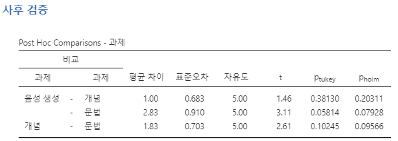

13 여러 평균 비교하기 - 일원분산분석
본 장에서는 심리학 통계에서 가장 널리 사용되는 도구 중 하나인 “분산분석(analysis of variance)”, 즉 ANOVA를 소개합니다. 이 기본적인 기법은 20세기 초 로널드 피셔(Sir Ronald Fisher)에 의해 개발되었으며, 불행하게도 그의 용어 선택으로 인해 다소 오해를 불러일으킬 수 있습니다. ANOVA라는 용어는 두 가지 측면에서 다소 오해의 소지가 있습니다. 첫째, 이 기법의 이름이 분산(variance)을 언급하고 있지만, 실제로 ANOVA는 평균(mean)의 차이를 조사하는 데 중점을 둡니다. 둘째, ANOVA라고 불리는 여러 가지 분석 방법이 존재하며, 그중 일부는 서로 거의 관련이 없습니다. 본서의 후반부에서 다양한 ANOVA 방법을 다룰 것이지만, 본 장에서는 가장 단순한 형태의 ANOVA만을 고려하는데, 여러 개의 독립된 집단에서 관찰된 데이터를 가지고, 특정 결과변수 측며에서 집단 사이의 차이가 존재하는지를 분석하는 방법입니다. 이러한 질문을 다루는 분석 방법이 바로 일원분산분석(one-way ANOVA)입니다.
본 장의 구성은 다음과 같습니다. 먼저, 본 장에서 계속해서 사용할 가상의 데이터를 소개합니다. 이후, 일원분산분석이 실제로 어떻게 작동하는지를 설명한 후 ANOVA의 작동 원리를 다룹니다. 다음으로, jamovi에서 ANOVA를 실행하는 방법을 살펴봅니다 [jamovi에서 ANOVA 실행하기]. 이 두 절이 본 장의 핵심입니다.
이후에는 ANOVA를 수행할 때 필연적으로 등장하는 중요한 주제들을 논의합니다. 여기에는 효과 크기 계산, 사후 검정, 다중 비교를 우한 보정, ANOVA가 전제하는 가정 등에 대한 논의가 포함됩니다. 또한 이러한 가정이 만족되는지 검토하는 방법과 가정이 위배될 경우의 대처방안에 대해 논의할 것입니다. 마지막으로 반복측정 분산분석(repeated measures ANOVA)에 대해서 다룹니다.
13.1 예제 데이터
새로운 항우울제 Joyzepam의 임상 시험에 참여하게 되었다고 가정해 봅시다. 이 약의 효과를 공정하게 평가하기 위해 연구에서는 세 가지 약물을 투여합니다. 하나는 위약(placebo)이며, 다른 하나는 기존의 항우울제 및 항불안제인 Anxifree입니다. 초기 실험을 위해 중등도에서 중증 수준의 우울증을 가진 참가자 18명을 모집합니다. 항우울제가 심리 치료와 함께 사용되는 경우도 있기 때문에, 연구에서는 인지행동치료(CBT)를 받는 참가자 9명과 치료를 받지 않는 참가자 9명을 포함합니다. 참가자들은 무작위로 배정되며(물론 이중 맹검 방식으로 진행됩니다), 각 약물 집단에 CBT를 받는 사람 3명과 치료를 받지 않는 사람 3명이 할당됩니다. 실험 후 심리학자가 참가자의 기분 향상도를 평가하며, 3개월 동안 약물을 복용한 후 각 참가자의 기분 개선 정도를 -5에서 +5까지의 척도로 측정합니다.
이제 clinicaltrial.csv 파일에서 데이터를 불러옵니다. 해당 데이터 세트에는 세 가지 변수인 drug, therapy, mood.gain이 포함되어 있습니다.
본 장에서 우리가 관심을 가지는 주요한 질문은 drug가 mood.gain에 미치는 영향입니다. 첫 번째 단계는 기술 통계를 계산하고 그래프를 그리는 것입니다. [기술 통계] 장에서 이를 수행하는 방법을 설명하였으며, jamovi에서 계산한 일부 기술 통계 결과를 Figure 13.1 에서 확인할 수 있습니다. 그래프를 보면 Joyzepam 집단에서 다른 두 집단(즉, Anxifree 집단과 위약 집단)보다 기분 개선 효과가 더 크다는 것을 알 수 있습니다. 또한 Anxifree 집단이 위약 집단보다 더 큰 기분 개선 효과를 보이지만, 그 차이는 상대적으로 작습니다. 우리가 대답하고자 하는 질문은 이러한 차이가 “실제” 차이인지, 아니면 단순한 우연에 의한 것인지입니다.
Tip 13.1. 실습: Clinical Trial 데이터
이 실습을 하려면 Tip 3.1 을 수행하여 lsj-data 모듈이 설치되어 있어야 합니다.
‘파일’-‘열기’-’데이터 라이브러리’를 메뉴에서 선택합니다. 그러면 ’learning statistics with jamovi’라는 폴더가 보일 것입니다. 이 폴더를 선택합니다. 이미 이전 실습에서 이 폴더를 선택했으면 바로 이 폴더가 열릴 수도 있습니다.
데이터 라이브러리 목록에서 ’Clinical Trial’을 선택합니다.
스프레드시트 창에서 각 변수의 이름을 더블클릭하여 각 변수의 척도유형과 데이터 유형이 제대로 설정되어 있는지 확인하고 필요하면 이를 정정합니다.
ID: 아이디, 정수drug,therapy: 명명척도, 문자mood.gain: 연속변수, 소수
- 다음 단계를 거쳐
drug별로 나누어mood.gain의 기본 통계와 분포를 확인합니다. 그러면 Figure 13.1 같은 결과과 나타납니다.
- ‘분석’-‘탐구’-‘기술통계’ 메뉴를 선택합니다.
mood.gain을 ‘변수’ 상자로 이동합니다.drug을 ‘Split by’ 상자로 이동합니다.- ‘기술통계’ 드롭다운에서 ’Variable across rows’로 하여 기술통계량이 행으로 배열되도록 합니다.
- ‘도표’-‘박스 도표’ 옵션에서 ’박스 도표’와 ’평균’을 체크합니다.
13.2 ANOVA의 작동 원리
임상 시험 데이터를 바탕으로 질문에 답하기 위해 일원분산분석을 수행할 것입니다. 먼저, ANOVA의 내장 기능을 사용하지 않고 기본적인 통계 도구를 직접 구축하는 방법을 보여드리겠습니다. 이를 통해 ANOVA의 작동 원리를 깊이 이해해 봅시다. 처음 몇 번은 직접 해보면서 이 과정을 익히는 것이 중요합니다.
이전 절에서 설명한 실험 설계에 따르면, 세 가지 약물에 따른 기분 향상도의 평균을 비교하는 것이 주요 관심사입니다. 이는 두 집단의 평균을 비교하는 \(t\)-검정과 유사하지만(Chapter 11 참고), 세 개 이상의 집단을 포함한다는 점에서 차이가 있습니다. \(\mu_P\)가 위약 모집단에서 기분 향상도의 평균을 나타내고, \(\mu_A\)와 \(\mu_J\)가 각각 Anxifree와 Joyzepam 모집단의 기분 향상도의 평균을 나타낸다면, 우리가 검정하려는 귀무가설은 세 모집단의 평균이 동일하다는 것입니다. 즉, 두 약물 모두 위약보다 효과적이지 않다는 것입니다. 이를 수식으로 표현하면 다음과 같습니다.
\[H_0: \mu_P=\mu_A=\mu_J\text{는 사실이다.}\]
이와 반대로, 대립가설은 세 가지 치료 중 적어도 하나가 다른 것과 다르다는 것입니다. 이 가설을 수학적으로 표현하는 것은 다소 까다로운데, 이는 귀무가설이 틀릴 수 있는 다양한 방식이 존재하기 때문입니다. 따라서, 우선 대립가설을 다음과 같이 기술하겠습니다.
\[H_1: \mu_P=\mu_A=\mu_J\text{는 사실이 아니다.}\]
이 귀무가설을 검정하는 것은 우리가 이전에 본 것들보다 훨씬 어렵습니다. 본 장의 제목을 고려하면 “ANOVA를 수행하면 된다”는 것이 자연스러운 답처럼 보이지만, “분산분석”이 평균에 대한 정보를 제공하는 방식은 직관적으로 명확하지 않을 수 있습니다. 사실, 이것이 ANOVA를 처음 접하는 사람들이 가장 많이 어려움을 느끼는 개념적인 부분 중 하나입니다. 이를 이해하기 위해서는 분산에 대하여, 특히 집단 간 변동성(between-group variability)과 집단 내 변동성(within-group variability)에 대해 논의하는 것이 중요합니다(Figure 13.2 참고).
13.2.1 \(Y\)의 분산을 구하는 두 가지 공식
먼저, 몇 가지 표기법을 도입하겠습니다. 전체 집단의 수를 \(G\)라고 하겠습니다. 우리의 데이터에서는 세 가지 약물이 있으므로 \(G = 3\)입니다. 다음으로, 전체 표본 크기를 나타내는 기호로 \(N\)을 사용하겠습니다. 우리의 데이터에는 총 \(N = 18\)명의 참여자가 있습니다. 마찬가지로, \(N_k\)를 \(k\)번째 집단에 속한 사람들의 수로 정의하겠습니다. 우리의 가상의 임상 실험에서는 모든 세 집단에서 표본 크기가 \(N_k = 6\)입니다.1 마지막으로, 결과변수를 \(Y\)로 나타내겠습니다. 여기서 \(Y\)는 기분 향상도를 의미합니다. 구체적으로, \(Y_{ik}\)는 \(k\)번째 집단의 \(i\)번째 구성원이 경험한 기분 향상도를 나타냅니다. 또한, \(\bar{Y}\)는 실험에 참여한 전체 18명의 평균 기분 향상도를 나타내며, \(\bar{Y}_k\)는 집단 \(k\)에 속한 6명의 평균 기분 향상도를 나타냅니다.
이제 표기법이 정리되었으므로 공식을 작성할 수 있습니다. 먼저, 우리가 Section 4.2 에서 사용했던 분산 공식을 다시 떠올려 보겠습니다. \(Y\)의 표본 분산은 다음과 같이 정의됩니다.
\[Var(Y)=\frac{1}{N}\sum_{k=1}^{G}\sum_{i=1}^{N_k}(Y_{ik}-\bar{Y})^2\]
이 공식은 Section 4.2 에서 사용했던 분산 공식과 거의 동일합니다. 단지 이번에는 두 개의 합산 기호가 추가되었는데, 하나는 집단에 대한 합산(\(k\)의 값)이고, 다른 하나는 집단 내 개인에 대한 합산(\(i\)의 값)입니다. 하지만 이는 단순히 표기 방식의 차이일 뿐입니다. 만약 우리가 결과변수를 표본의 개인 \(p\)에 대한 값인 \(Y_p\)로 표기했다면, 단일 합산만 필요했을 것입니다. 여기서 두 개의 합산을 사용한 이유는 사람들이 집단으로 분류되었으며, 집단 내에서 개별적으로 번호가 부여되었기 때문입니다.
구체적인 예를 들어보겠습니다. Table 13.1 을 고려해 보면, 총 \(N = 5\)명의 사람들이 \(G = 2\)개의 집단으로 분류되었습니다. 임의로 “쿨한(cool)” 사람들을 집단 1, “쿨하지 않은(uncool)” 사람들을 집단 2로 지정하겠습니다. 결과적으로, 쿨한 집단에는 세 명(\(N_1 = 3\)), 쿨하지 않은 집단에는 두 명(\(N_2 = 2\))이 포함되어 있습니다.
여기서 두 가지 서로 다른 라벨링 방식을 사용할 수 있습니다. 우리는 “개인(person)” 변수 \(p\)를 사용하여 \(p\)번째 개인의 예민함을 \(Y_p\)로 나타낼 수 있습니다. 예를 들어, 표에서 Tim은 네 번째 사람으로 표시되어 있으므로, \(p = 4\)라고 할 수 있습니다. 따라서 Tim의 예민함 \(Y\)를 나타낼 때, \(p = 4\)인 사람의 예민함은 \(Y_p = 91\)로 표기할 수 있습니다.
| 이름 | 사람 \(P\) | 집단 | 집단 번호 \(k\) | 집단 내 인덱스 | 예민함 \( Y_{ik} \) or \( Y_p \) |
|---|---|---|---|---|---|
| Ann | 1 | cool | 1 | 1 | 20 |
| Ben | 2 | cool | 1 | 2 | 55 |
| Cat | 3 | cool | 1 | 3 | 21 |
| Tim | 4 | uncool | 2 | 1 | 91 |
| Egg | 5 | uncool | 2 | 2 | 22 |
그러나 Tim을 나타내는 또 다른 방법도 있습니다. Tim이 “쿨하지 않은(uncool)” 집단(\(k = 2\))에 속하며, 이 집단에서 첫 번째로 나열된 사람(\(i = 1\))이라는 점을 이용할 수도 있습니다. 따라서 Tim의 예민함을 나타낼 때, \(k = 2\)이고 \(i = 1\)일 때 \(Y_{ik} = 91\)로 표기할 수도 있습니다. 즉, 각 개인 \(p\)는 특정한 \(ik\) 조합과 일대일로 대응되므로, 위에서 제시한 공식은 원래의 분산 공식과 사실상 동일합니다.
\[Var(Y)=\frac{1}{N}\sum_{p=1}^{N}(Y_p-\bar{Y})^2\]
두 공식 모두 동일한 표본 내 모든 관측값의 편차의 제곱을 합산하는 과정입니다. 일반적으로는 더 간단한 \(Y_p\) 표기법을 사용하는 것이 일반적이며, \(Y_p\)를 사용하는 식이 더 간결합니다. 하지만 ANOVA를 수행할 때는 각 참가자가 속한 집단을 명확히 구분하는 것이 중요하므로, \(Y_{ik}\) 표기법을 사용해야 합니다.
13.2.2 분산에서 제곱합으로
이제 분산이 어떻게 계산되는지 충분히 이해했으므로, 총제곱합(total sum of squares)이라는 개념을 정의하겠습니다. 이는 \(SS_{tot}\)로 표기됩니다. 매우 간단합니다. 분산을 계산할 때는 제곱된 편차들의 평균을 구하지만, 여기서는 단순히 그것들을 더합니다. 따라서 총제곱합의 공식은 분산의 공식과 거의 동일합니다: \[SS_{tot}=\sum_{k=1}^{G} \sum_{i=1}^{N_k} (Y_{ik} - \bar{Y})^2\]
ANOVA의 맥락에서 분산을 분석한다고 말할 때, 실제로 우리가 다루는 것은 분산 자체가 아니라 총제곱합입니다. 총제곱합의 아주 유용한 점은 이를 두 가지 다른 종류의 변동으로 나눌 수 있다는 것입니다. 먼저, 집단 내 제곱합(within-group sum of squares)을 정의할 수 있는데, 이는 각 개인이 자신의 집단 평균과 얼마나 다른지를 나타냅니다: \[SS_{w}= \sum_{k=1}^{G} \sum_{i=1}^{N_k} (Y_{ik} - \bar{Y}_k)^2\]
여기서 \(\bar{Y}_k\)는 집단 평균입니다. 우리의 예제에서, \(\bar{Y}_k\)는 k번째 약을 복용한 사람들이 경험한 평균 기분 향상도입니다. 즉, 모든 실험 참가자의 평균과 비교하는 것이 아니라, 같은 집단 내 사람들끼리만 비교하는 것입니다. 따라서 \(SS_w\) 값은 총제곱합보다 작을 것으로 예상됩니다. 왜냐하면 \(SS_w\)는 약물이 사람들의 기분에 미치는 차이를 완전히 무시하기 때문입니다.
다음으로, 집단 간의 차이만을 포착하는 세 번째 변동 개념을 정의할 수 있습니다. 이를 위해 집단 평균 \(\bar{Y}_k\)와 전체 평균 \(\bar{Y}\) 간의 차이를 살펴봅니다. 이 변동의 크기를 정량화하기 위해 집단 간 제곱합(between-group sum of squares)을 계산합니다: \[\begin{aligned} SS_{b} &= \sum_{k=1}^{G} \sum_{i=1}^{N_k} ( \bar{Y}_{k} - \bar{Y} )^2 \\ &= \sum_{k=1}^{G} N_k ( \bar{Y}_{k} - \bar{Y} )^2 \end{aligned}\]
총제곱합 \(SS_{tot}\)은 사실 집단 간 변동 \(SS_b\)와 집단 내 변동 \(SS_w\)의 합이라는 것을 어렵지 않게 증명할 수 있습니다. 즉: \[SS_w+SS_b=SS_{tot}\]
그렇다면 우리가 발견한 것은 무엇일까요? 결과변수와 관련된 총 변동(\(SS_{tot}\))은 “다른 집단의 표본 평균 차이에 따른 변동”(\(SS_b\))과 “그 외의 모든 변동”(\(SS_w\))의 합으로 수학적으로 분해될 수 있다는 것입니다.2
그렇다면 이 정보는 집단 간 모평균이 다른지 여부를 파악하는 데 어떻게 도움이 될까요? 음. 잠깐만요. 가만히 생각해 보니, 바로 우리가 찾고 있던 내용이네요. 귀무가설이 참이라면 모든 표본 평균이 서로 비슷할 것으로 예상되지 않습니까? 그렇다면 \(SS_b\)는 매우 작을 것이고, 최소한 “그 외의 변동”(\(SS_w\))보다 훨씬 작을 것으로 기대됩니다. 흠. 가설 검정이 다가오고 있는 것이 느껴지는군요.
13.2.3 제곱합에서 \(F\)-검정으로
이전 절에서 본 것처럼, ANOVA의 정성적 개념은 두 제곱합 값인 \(SS_b\)와 \(SS_w\)를 서로 비교하는 것입니다. 만약 집단 간 변동(\(SS_b\))이 집단 내 변동(\(SS_w\))에 비해 크다면, 각 집단의 모집단 평균이 동일하지 않다고 의심할 만합니다. 이를 실질적인 가설 검정으로 변환하려면 약간의 “조정”이 필요합니다. 먼저 검정 통계량인 \(F\)-비율(\(F\)-ratio)을 계산하는 방법을 보여드린 후, 이를 이렇게 계산하는 이유를 생각해 보겠습니다.
\(SS\) 값들을 \(F\)-비율로 변환하려면 먼저 \(SS_b\)와 \(SS_w\) 값과 관련된 자유도를 계산해야 합니다. 자유도는 특정 계산에 기여하는 고유한 “데이터 점”의 수에서 해당 점들이 만족해야 하는 “제약 조건”의 수를 뺀 값에 해당합니다. 집단 내 변동의 경우에는 개별 관측값(\(N\)개 데이터 점)의 변동을 집단 평균(\(G\)개의 제약 조건)과의 차이로부터 계산합니다. 반면, 집단 간 변동의 경우, 집단 평균(\(G\)개의 데이터 점)의 변동을 전체 평균(1개의 제약 조건)과의 차이로부터 계산합니다. 따라서 자유도는 다음과 같습니다. \[df_b=G-1\] \[df_w=N-G\]
이제 간단한 과정입니다. 다음으로, 제곱합 값을 “평균제곱”으로 변환하는데, 이는 자유도로 나누어 계산합니다. \[MS_b=\frac{SS_b}{df_b}\] \[MS_w=\frac{SS_w}{df_w}\]
마지막으로, 집단 간 \(MS\) 값을 집단 내 \(MS\) 값으로 나누어 \(F\)-비율을 계산합니다. \[F=\frac{MS_b}{MS_w}\]
아주 일반적인 수준에서 보면, \(F\)-통계량의 직관적인 의미는 명확합니다. \(F\) 값이 클수록 집단 간 변동이 집단 내 변동에 비해 크다는 뜻입니다. 따라서 \(F\) 값이 클수록 귀무가설을 기각할 근거가 더 많아집니다. 그러나 실제로 귀무가설을 기각하려면 \(F\) 값이 얼마나 커야 할까요? 이를 이해하려면 ANOVA가 무엇이며 평균 제곱값이 실제로 무엇을 의미하는지를 조금 더 깊이 이해해야 합니다.
다음 절에서는 이를 좀 더 자세히 논의할 것입니다. 그러나 이론적 세부 사항에 관심이 없는 독자들을 위해 결론을 먼저 말씀드리겠습니다. 가설 검정을 완성하려면, 귀무가설이 참일 때 \(F\)-통계량의 표본 분포를 알아야 합니다. 놀랍지 않게도, 귀무가설 하에서 \(F\)-통계량의 표본 분포는 \(F\)-분포를 따릅니다. 확률 이론 소개(Chapter 7)에서 논의했듯이, \(F\)-분포에는 두 개의 매개변수가 있으며, 이는 관련된 두 자유도에 해당합니다. 첫 번째 자유도 \(df_1\)은 집단 간 자유도(\(df_b\)), 두 번째 자유도 \(df_2\)는 집단 내 자유도(\(df_w\))입니다.
일원분산분석에서 사용되는 모든 주요 개념과 이를 계산하는 공식은 Table 13.2 에 요약되어 있습니다.
| 집단 간 | 집단 내 | |
|---|---|---|
| \( df \) | \( df_b=G-1 \) | \( df_w=N-G \) |
| 제곱합 | \( SS_b=\sum_{k=1}^{G} N_k (\bar{Y}_k-\bar{Y})^2 \) | \( SS_w=\sum_{k=1}^{G} \sum_{i=1}^{N_k} (Y_{ik}-\bar{Y}_k)^2 \) |
| 제곱평균 | \( MS_b=\frac{SS_b}{df_b} \) | \( MS_w=\frac{SS_w}{df_w} \) |
| \( F \)-통계량 | \( F=\frac{MS_b}{df_b} \) | - |
| \(p\)-값 | [복잡함] | - |
기술적 세부사항
ANOVA는 근본적으로 두 개의 서로 다른 통계 모형, \(H_0\)와 \(H_1\), 간의 경쟁입니다. 이 절의 시작에서 귀무가설과 대립가설을 설명할 때, 이러한 모형이 실제로 무엇인지에 대해 다소 모호하게 설명했습니다. 이제 이를 바로잡겠습니다. 귀무가설이 참이라면, 모든 집단의 평균이 동일해야 합니다. 이 경우, 결과변수 \(Y_{ik}\)를 단일 모집단 평균 \(\mu\)와 해당 평균에서의 편차로 표현하는 것이 자연스러운 접근 방식입니다. 이 편차는 일반적으로 \(\epsilon_{ik}\)로 표시되며, 전통적으로 해당 관측값과 관련된 오차 또는 잔차라고 불립니다.
그러나 주의해야 합니다. “오차”라는 단어는 통계학에서 기술적인 의미를 가지며, 일상적인 영어 단어 “error”와는 다소 다릅니다. 일상적으로 “error”는 실수를 의미하지만, 통계학에서는 그렇지 않습니다(또는 반드시 그렇다고 볼 수 없습니다). 이런 점을 고려하면, “잔차”라는 단어가 “오차”보다 더 적절한 용어입니다. 통계학에서 두 용어 모두 “설명되지 않은 변동성”, 즉 “모형이 설명할 수 없는 요소”를 의미합니다.
어쨌든, 귀무가설을 통계 모형으로 표현하면 다음과 같습니다: \[Y_{ik}=\mu+\epsilon_{ik}\]
여기서 잔차 값 \(\epsilon_{ik}\)는 정규 분포를 따르며, 평균이 0이고 표준 편차가 \(\sigma\)인 것으로 가정합니다. 즉, 다음과 같이 나타낼 수 있습니다: \[\epsilon_{ik} \sim Normal(0,\sigma^2)\]
그렇다면 대립가설 \(H_1\)은 어떻게 될까요? 유일한 차이점은 각 집단이 서로 다른 모집단 평균을 가질 수 있도록 허용한다는 점입니다. 즉, \(k\)번째 집단의 모집단 평균을 \(\mu_k\)라고 하면, 대립가설의 통계 모형은 다음과 같이 표현됩니다: \[Y_{ik}=\mu_k+\epsilon_{ik}\]
여기서도 마찬가지로 오차항이 평균 0이고 표준편차가 \(\sigma\)인 정규 분포를 따른다고 가정합니다. 즉, 대립가설에서도 다음을 가정합니다: \[\epsilon_{ik} \sim Normal(0,\sigma^2)\]
이제 \(H_0\)와 \(H_1\)을 뒷받침하는 통계 모형을 보다 자세히 설명했으므로, 평균제곱(\(MS\)) 값들이 무엇을 측정하는지, 그리고 이것이 \(F\) 통계량의 해석에 어떤 의미를 가지는지 쉽게 이해할 수 있습니다. 이에 대한 증명 과정은 생략하겠지만, 집단 내 평균제곱(\(MS_w\))은 오차 분산 \(\sigma^2\)의 추정량으로 볼 수 있습니다. 집단 간 평균제곱(\(MS_b\)) 또한 추정량이지만, 이 값은 오차 분산뿐만 아니라 집단 평균 간의 실제 차이에 따라 달라지는 어떤 값을 추가적으로 포함합니다. 이 값을 \(Q\)라고 하면, \(F\) 통계량은 기본적으로 다음과 같습니다:3 \[F=\frac{\hat{Q}+\hat{\sigma}^2}{\hat{\sigma}^2}\]
여기서 귀무가설이 참일 경우 \(Q = 0\), 대립가설이 참일 경우 \(Q > 0\)이 됩니다(e.g., Hays (1994), ch. 10). 따라서 최소한 \(F\) 값이 1보다 커야 귀무가설을 기각할 가능성이 있습니다. 이것이 \(F\) 값이 1보다 작을 수 없다는 의미는 아닙니다. 귀무가설이 참이라면 \(F\) 비율의 표본분포 평균은 1이므로,4 귀무가설을 안전하게 기각하려면 \(F\) 값이 1보다 커야 합니다.
표본분포에 대해 좀 더 정확하게 말하면, 귀무가설이 참일 경우 \(MS_b\)와 \(MS_w\)는 모두 잔차 \(ε_{ik}\)의 분산을 추정합니다. 만약 이러한 잔차들이 정규 분포를 따른다면, \(ε_{ik}\)의 분산 추정값은 카이제곱(\(χ^2\)) 분포를 따를 것입니다. (이전에 언급한 Section 7.6 에서 설명한 바와 같이) 카이제곱 분포란 정규 분포를 따르는 여러 값을 제곱하여 합산한 값이 따르는 분포입니다. 그리고 \(F\) 분포란, (정의상) \(χ^2\) 분포를 따르는 두 값의 비율을 구할 때 따르는 분포이므로, 우리는 \(F\) 통계량의 표본분포를 알 수 있습니다. 물론 여기서 많은 세부 내용을 생략했지만, 전체적인 개념은 이렇습니다.
13.2.4 예제 분석
이전 논의는 다소 추상적이고 기술적인 측면이 많았으므로, 이제 실전 예제를 살펴보는 것이 유용할 것입니다. 이를 위해, 이 장의 처음에서 소개한 임상 시험 데이터를 다시 살펴보겠습니다. 우리가 처음에 계산한 기술 통계량에 따르면, 집단 평균은 다음과 같습니다: 위약 집단은 기분 향상(mood.gain)의 평균 값이 \(0.45\), Anxifree 집단은 \(0.72\), Joyzepam 집단은 \(1.48\)입니다. 이를 염두에 두고, 1899년처럼 손으로 계산을 시작해 봅시다5. 하지만 1899년이 아니고 저는 게으르므로, 첫 번째 5개 관측치만 계산해 보겠습니다. 먼저, 집단 내 제곱합(\(SS_w\))을 계산하는 것으로 시작하겠습니다. 이를 위해, 계산을 도와줄 표를 작성하겠습니다(Table 13.3).
| 집단 \( k \) | 결과변수 \( Y_{ik} \) |
|---|---|
| placebo | 0.5 |
| placebo | 0.3 |
| placebo | 0.1 |
| anxifree | 0.6 |
| anxifree | 0.4 |
이 단계에서 표에 포함된 유일한 정보는 데이터 자체입니다. 즉, 집단변수(즉, drug)와 결과변수(즉, mood.gain)입니다. 결과변수는 이전에 소개한 식에서 \(\bar{Y}_{ik}\) 값에 해당합니다. 다음 단계는 연구에 포함된 각 개인에 대해 해당하는 집단 평균 \(\bar{Y}_k\)를 기록하는 것입니다. 이는 약간 반복적이지만 어렵지는 않습니다. 이미 기술 통계를 계산할 때 집단 평균을 구했기 때문입니다(Table 13.4).
| 집단 \( k \) | 결과변수 \( Y_{ik} \) | 집단 평균 \( \bar{Y}_k \) |
|---|---|---|
| placebo | 0.5 | 0.45 |
| placebo | 0.3 | 0.45 |
| placebo | 0.1 | 0.45 |
| anxifree | 0.6 | 0.72 |
| anxifree | 0.4 | 0.72 |
이제 이를 기록했으므로, 각 개인의 값에서 해당 집단 평균을 뺀 편차를 계산해야 합니다. 즉, \(Y_{ik} - \bar{Y}_k\) 값을 구합니다. 그런 다음, 모든 값을 제곱합니다. 그 결과는 Table 13.5 에 있습니다.
| 집단 \( k \) | 결과변수 \( Y_{ik} \) | 집단 평균 \( \bar{Y}_k \) | 집단 평균으로부터의 편차 \( Y_{ik} - \bar{Y}_k \) | 편차 제곱 \( (Y_{ik}-\bar{Y}_k)^2 \) |
|---|---|---|---|---|
| placebo | 0.5 | 0.45 | 0.05 | 0.0025 |
| placebo | 0.3 | 0.45 | -0.15 | 0.0225 |
| placebo | 0.1 | 0.45 | -0.35 | 0.1225 |
| anxifree | 0.6 | 0.72 | -0.12 | 0.0136 |
| anxifree | 0.4 | 0.72 | -0.32 | 0.1003 |
이제 마지막 단계는 단순합니다. 집단 내 제곱합을 계산하기 위해 모든 관측치에 대해 제곱 편차를 합산하면 됩니다.
\[ \begin{split} SS_w & = 0.0025 + 0.0225 + 0.1225 + 0.0136 + 0.1003 \\ & = 0.2614 \end{split} \]
물론, 실제로 정확한 값을 얻으려면 전체 18개 관측치를 포함해야 합니다. 손으로 계속 계산할 수도 있지만, 매우 지루한 작업이 될 것입니다. 대신, OpenOffice나 Excel 같은 스프레드시트 프로그램을 사용하면 쉽게 수행할 수 있습니다. 직접 시도해 보십시오. 제가 Excel에서 수행한 결과는 clinicaltrial_anova.xls 파일에 저장되어 있습니다. 이 방법을 사용하면 집단 내 제곱합 값이 \(1.39\)로 나옵니다.
이제 집단 내 변동(\(SS_w\))을 계산했으므로, 집단 간 제곱합(\(SS_b\))을 계산할 차례입니다. 이 과정은 앞선 계산과 매우 유사합니다. 차이점은 개별 관측치 \(Y_{ik}\)와 집단 평균 \(\bar{Y}_k\)의 차이를 계산하는 대신, 집단 평균 \(\bar{Y}_k\)와 전체 평균 \(\bar{Y}\) (이 경우 \(0.88\))의 차이를 계산한다는 점입니다(Table 13.6).
| 집단 \( k \) | 집단 평균 \( \bar{Y}_k \) | 전체 평균 \( \bar{Y} \) | 편차 \( \bar{Y}_k - \bar{Y} \) | 편차 제곱 \( ( \bar{Y}_k-\bar{Y})^2 \) |
|---|---|---|---|---|
| placebo | 0.45 | 0.88 | -0.43 | 0.19 |
| anxifree | 0.72 | 0.88 | -0.16 | 0.03 |
| joyzepam | 1.48 | 0.88 | 0.60 | 0.36 |
그러나 집단 간 계산에서는 각 집단의 관측치 개수 \(N_k\)를 각 제곱 편차에 곱해야 합니다. 이는 각 집단의 모든 관측치(\(N_k\)개)가 집단 간 차이에 기여하기 때문입니다. 그러므로 위약 집단에 6 명의 사람이 있고 위약 집단의 평균이 전체 평균과 \(0.19\)의 차이가 있다면, 이 5 명과 관련된 집단 간 총변동은 \(6 \times 0.19 = 1.14\)입니다. 따라서 우리의 계산 표를 확장해야 합니다(Table 13.7).
| 집단 \( k \) | ... | 편차 제곱 \( (\bar{Y}_k-\bar{Y})^2 \) | 표본 크기 \( N_k \) | 가중 편차 제곱 \( N_k (\bar{Y}_k-\bar{Y})^2 \) |
|---|---|---|---|---|
| placebo | ... | 0.19 | 6 | 1.14 |
| anxifree | ... | 0.03 | 6 | 0.18 |
| joyzepam | ... | 0.36 | 6 | 2.16 |
이제 집단 간 제곱합을 계산하기 위해 모든 집단에 대해 가중 제곱 편차를 합산하면 됩니다. \[ \begin{aligned} SS_b & = 1.14 + 0.18 + 2.16 \\ &= 3.48 \end{aligned} \]
보시다시피, 집단 간 계산이 훨씬 간단합니다6. 이제 \(SS_b\)와 \(SS_w\) 값을 계산했으므로, ANOVA의 나머지 과정은 매우 간단합니다. 다음 단계는 자유도를 계산하는 것입니다. 우리는 \(G = 3\)개의 집단과 \(N = 18\)개의 전체 관측치를 가지고 있으므로 자유도는 단순한 뺄셈으로 계산할 수 있습니다. \[ \begin{split} df_b & = G-1 = 2 \\ df_w & = N-G = 15 \end{split} \]
이제 집단 내 및 집단 간 변동에 대한 제곱합과 자유도를 계산했으므로, 이를 이용하여 평균제곱값을 구할 수 있습니다. \[ \begin{split} MS_b & = \frac{SS_b}{df_b} = \frac{3.48}{2} = 1.74 \\ MS_w & = \frac{SS_w}{df_w} = \frac{1.39}{15} = 0.09 \end{split} \]
이제 거의 끝났습니다. 평균제곱값을 이용하여 우리가 관심을 가지는 검정 통계량인 \(F\) 값을 계산할 수 있습니다. 이는 집단 간 평균제곱값을 집단 내 평균제곱값으로 나누어 계산합니다. \[ \begin{split} F & = \frac{MS_b}{MS_w} = \frac{1.74}{0.09} \\ & = 19.3 \end{split} \]
드디어 검정 통계량을 얻었습니다! 마지막 단계는 이 검정이 유의한 결과를 주는지 확인하는 것입니다. 과거에는 통계 책을 펼쳐 자유도 2와 15에 대한 특정 유의수준(예: \(0.05\), \(0.01\), \(0.001\))에 해당하는 임계 \(F\) 값을 찾아야 했습니다. 이 방법을 따르면 \(\alpha = 0.001\)일 때의 임계 \(F\) 값은 \(11.34\)로 나옵니다. 우리의 \(F\) 값이 이보다 크므로 \(p < 0.001\)이라고 할 수 있습니다. 하지만 요즘에는 통계 소프트웨어가 정확한 \(p\) 값을 자동으로 계산해 줍니다. 이 경우 \(p\) 값은 \(0.000071\)입니다. 따라서, 우리가 1종 오류를 극단적으로 보수적으로 설정하지 않는 한, 귀무가설을 기각할 가능성이 매우 높습니다.
이제 거의 끝났습니다. 계산을 완료한 후에는, 이러한 숫자들을 ANOVA 표로 정리하는 것이 전통적입니다. 우리 임상 시험 데이터에 대한 ANOVA 표는 Table 13.8 같습니다.
| \( df \) | 제곱합 | 제곱평균 | \(F\)-통계량 | \(p\)-값 | |
|---|---|---|---|---|---|
| 집단 간 | 2 | 3.48 | 1.74 | 19.3 | 0.000071 |
| 집단 내 | 15 | 1.39 | 0.09 | - | - |
요즘에는 직접 ANOVA 표를 작성할 일이 거의 없지만, 대부분의 통계 소프트웨어(jamovi 포함)는 ANOVA 결과를 표 형식으로 출력하므로 이를 읽는 법을 익혀 두는 것이 좋습니다. 그러나 보고서에 전체 표를 포함할 필요는 거의 없습니다. 일반적으로 결과를 다음과 같이 보고하면 충분합니다.
일원분산분석 결과, 약물이 기분 향상에 미치는 효과가 유의한 것으로 나타났습니다 (\(F(2,15) = 19.3, p < .001\)).
이 짧은 문장을 얻기 위해 엄청난 계산을 했군요!
13.3 jamovi에서 ANOVA 수행하기
지난 절을 읽고 난 후 여러분이 어떤 생각을 하고 있을지 저는 잘 알고 있습니다. 특히, 제 조언을 따라 직접 종이에 적거나 스프레드시트에서 ANOVA 계산을 수행했다면 말이죠. 직접 ANOVA 계산을 하는 것은 정말 번거롭습니다. 우리가 수행해야 할 계산이 상당히 많고, ANOVA를 할 때마다 이 과정을 반복해야 한다면 매우 지루할 것입니다.
13.3.1 jamovi를 사용하여 ANOVA 설정하기
여러분의 삶을 더 편하게 하기 위해, jamovi에서 ANOVA를 수행할 수 있습니다. 멋지지 않나요! ‘분산분석’-‘분산분석’ 메뉴로 이동한 후, mood.gain 변수를 ‘종속변수’ 상자로 옮기고, drug 변수를 ‘고정요인’ 상자로 옮기십시오. 그러면 Figure 13.3 같은 결과를 얻을 수 있습니다.7 또한, 저는 ‘효과 크기’ 옵션에서 \(\eta^2\) 체크박스를 선택하였으며, 결과 테이블에 이 값도 포함되어 있습니다. 효과 크기에 대해서는 조금 후에 다시 다루겠습니다.
jamovi 결과 테이블은 제곱합(Sums of Squares), 자유도(Degrees of Freedom), 그리고 현재 우리가 크게 관심을 두지 않는 몇 가지 추가 정보를 보여줍니다. 하지만, jamovi에서는 ’집단 간(Between Group)’과 ’집단 내(Within Group)’라는 용어를 사용하지 않는다는 점을 주목하십시오. 대신, 더 의미 있는 명칭을 사용하려고 합니다. 현재 예제에서는 집단 간 분산이 drug이 결과변수에 미치는 효과에 해당하고, 집단 내 분산이 “남은” 변동성에 해당하므로 이를 잔차라고 부릅니다.
이제 [예제 계산]에서 제가 직접 계산한 값과 비교해 보면, 반올림 오차를 제외하면 거의 동일하다는 것을 알 수 있습니다. 집단 간 제곱합(\(SS_b\))은 3.45이고, 집단 내 제곱합(\(SS_w\))은 1.39이며, 자유도는 각각 2와 15입니다. 또한, \(F\) 값과 \(p\) 값도 계산되며, 반올림 오차를 제외하면 우리가 직접 수행했던 길고 지루한 계산 과정에서 얻은 값과 거의 동일합니다.
Tip 13.2. 실습: 분산분석
Tip 13.1 실습을 이어서 분산분석을 수행해 봅니다.
‘분석’-‘분산분석’-‘분산분석’ 메뉴를 선택합니다.
왼편의 ‘분산분석’ 창에서 다음을 수행하면 ‘결과’ 창에 분산분석 결과가 출력됩니다.
mood.gain을 ‘종속변수’ 상자로 이동합니다.drug을 ‘고정요인’ 상자로 이동합니다.- ‘효과 크기’ 옵션 아래의 \(\eta^2\)을 체크합니다.

13.4 효과 크기
ANOVA에서 효과 크기를 측정하는 방법에는 여러 가지가 있지만, 가장 일반적으로 사용되는 척도는 \(\eta^2\)과 부분(partial) \(\eta^2\)입니다. 일원분산분석(one-way ANOVA)에서는 이 두 값이 동일하므로, 여기서는 우선 \(\eta^2\)만 설명하겠습니다. \(\eta^2\)의 정의는 매우 간단합니다.
\[\eta^2=\frac{SS_b}{SS_{tot}}\]
이것이 전부입니다. 따라서 Figure 13.3 ANOVA 테이블을 보면, \(SS_b = 3.45\)이고 \(SS_{tot} = 3.45 + 1.39 = 4.84\)입니다. 따라서 \(\eta^2\) 값은 다음과 같습니다.
\[\eta^2=\frac{3.45}{4.84}=0.71\]
\(\eta^2\)의 해석 또한 매우 간단합니다. 이는 결과변수(mood.gain)의 변동성 중에서 예측변수(drug)로 설명할 수 있는 비율을 나타냅니다. \(\eta^2=0\)이면 두 변수 사이에 전혀 관계가 없다는 의미이며, \(\eta^2=1\)이면 완벽한 관계가 있다는 의미입니다. 더욱이, \(\eta^2\) 값은 이전에 논의한 \(R^2\) 값(Section 12.6.1)과 매우 밀접한 관련이 있으며, 해석 방식도 동일합니다.
많은 통계 교재에서는 ANOVA에서 기본적인 효과 크기 척도로 \(\eta^2\)를 권장하지만, 실제 데이터 분석에서는 \(\eta^2\)가 편향된 추정량이 될 수 있기 때문에 최적의 효과 크기 척도가 아닐 수도 있다는 의견도 있습니다. 이에 대한 흥미로운 블로그 게시글8이 있으며, 이 글에서 Daniel Lakens는 \(\eta^2\)의 문제점을 지적하고 있습니다. 다행히도, jamovi에는 \(\eta^2\)과 함께 보다 편향이 적은 척도인 오메가 제곱(\(\omega^2\))을 지정할 수 있는 옵션도 제공됩니다.
13.5 다중 비교와 사후 검정
두 개 이상의 집단을 포함하는 ANOVA를 수행한 후 유의한 효과가 나타난다면, 가장 먼저 알고 싶은 것은 어떤 집단들이 실제로 서로 다른지를 확인하는 것입니다. 우리 약물 예제에서 귀무가설은 세 가지 약물(플라시보, Anxifree, Joyzepam)이 기분에 미치는 효과가 정확히 동일하다는 것이었습니다. 그러나 이를 더 깊이 생각해 보면, 귀무가설은 사실상 세 가지 다른 주장들을 동시에 포함하고 있습니다. 즉, 다음을 주장하고 있습니다.
- 경쟁사의 약물(Anxifree)은 플라시보보다 더 나은 효과를 보이지 않는다(즉, \(\mu_A = \mu_P\))
- 우리의 약물(Joyzepam)은 플라시보보다 더 나은 효과를 보이지 않는다(즉, \(\mu_J = \mu_P\))
- Anxifree와 Joyzepam은 동일한 효과를 보인다(즉, \(\mu_J = \mu_A\))
이 세 가지 주장 중 하나라도 거짓이라면, 귀무가설도 거짓이 됩니다. 따라서 귀무가설을 기각한 후에는 이 세 가지 주장 중 적어도 하나가 사실이 아님을 알게 됩니다. 하지만 정확히 어떤 주장이 거짓일까요? 이 세 가지 명제는 모두 중요한 의미를 갖습니다. 새로운 약물 Joyzepam이 플라시보보다 효과적인지 확인하는 것은 물론이고, 기존의 상업적 대안인 Anxifree와 비교했을 때 어떤지 아는 것도 중요합니다. 또한 Anxifree와 플라시보 간의 효과 차이를 확인하는 것도 유용할 수 있습니다. Anxifree가 이미 다른 연구자들에 의해 플라시보와 비교된 적이 있다 하더라도, 본 연구가 기존 연구와 유사한 결과를 도출하는지 확인하는 것은 여전히 가치가 있습니다.
귀무가설을 이 세 가지 별개의 명제로 구성하여 살펴보면, 우리가 구별해야 할 여덟 가지 가능한 “세계의 상태”가 있다는 것이 명확해집니다 (Table 13.9 참고).
| 가능한 경우: | \( \mu_P = \mu_A \)인가? | \( \mu_P = \mu_J \)인가? | \( \mu_A = \mu_J \)인가? | 어떤 가설을 채택하는가? |
|---|---|---|---|---|
| 1 | \( \checkmark \) | \( \checkmark \) | \( \checkmark \) | 귀무 |
| 2 | \( \checkmark \) | \( \checkmark \) | 대립 | |
| 3 | \( \checkmark \) | \( \checkmark \) | 대립 | |
| 4 | \( \checkmark \) | 대립 | ||
| 5 | \( \checkmark \) | \( \checkmark \) | \( \checkmark \) | 대립 |
| 6 | \( \checkmark \) | 대립 | ||
| 7 | \( \checkmark \) | 대립 | ||
| 8 | 대립 |
귀무가설을 기각함으로써 우리는 #1이 실제 세계의 상태라고 믿지 않기로 결정한 것입니다. 다음으로 던질 질문은, 나머지 일곱 가지 가능성 중 어떤 것이 맞다고 생각하는가입니다? 이러한 상황에 직면했을 때, 데이터를 살펴보는 것이 일반적으로 도움이 됩니다. 예를 들어, Figure 13.1 도표를 보면 Joyzepam이 플라시보과 Anxifree보다 더 나아 보이지만, Anxifree와 플라시보 사이에는 실제적 차이가 없는 것으로 보입니다. 그러나 이를 보다 명확하게 확인하기 위해서는 추가적인 검정을 수행하는 것이 도움이 됩니다.
13.5.1 두 집단 \(t\)-검정 수행하기
이 문제를 어떻게 해결할 수 있을까요? 우리는 세 가지의 두 집단의 조합(플라시보 대 Anxifree, 플라시보 대 Joyzepam, Anxifree 대 Joyzepam)이 있으므로, 세 개의 개별적인 \(t\)-검정을 수행하여 결과를 확인할 수 있습니다. 이는 jamovi에서 쉽게 수행할 수 있습니다. ANOVA의 ‘사후 검정(Post Hoc Tests)’ 옵션으로 이동하여 drug 변수를 오른쪽의 상자로 이동한 후 ‘보정 없음(No correction)’ 체크박스를 클릭하면 됩니다. 그러면 Figure 13.4 같이 세 가지 약물 수준 간의 쌍별 \(t\)-검정을 보여주는 깔끔한 표가 생성됩니다.
ㅓ ### 다중 검정에 대한 보정
이전 절에서 저는 많은 \(t\)-검정을 실행하는 것에 문제가 있다는 점을 암시했습니다. 문제는 이러한 분석을 수행할 때 우리가 “낚시 탐색”을 하고 있다는 것입니다. 즉, 명확한 이론적 지침 없이 다수의 검정을 실행하여 유의미한 결과가 나오기를 기대하는 것입니다. 이러한 이론이 없는 집단 차이 탐색을 사후 분석(post hoc analysis) 이라고 합니다(라틴어로 “post hoc”은 “이후에”라는 의미입니다).9
사후 분석을 수행하는 것은 괜찮지만, 많은 주의가 필요합니다. 예를 들어, 이전 절에서 수행한 분석은 피해야 합니다. 각 개별 \(t\)-검정은 5%의 제1종 오류율(즉, \(\alpha = .05\))을 갖도록 설계되었으며, 저는 세 개의 검정을 수행했습니다. 만약 ANOVA에서 10개의 집단을 포함하고 있고, 45개의 “사후” \(t\)-검정을 실행하여 어떤 집단이 유의하게 다른지를 찾으려고 했다면, 2~3개의 검정은 단순히 우연 때문에 유의한 것으로 나타날 가능성이 있습니다. Chapter 9 에서 살펴본 것처럼, 귀무가설 검정의 중심 원리는 제1종 오류율을 통제하는 것이지만, 여러 개의 \(t\)-검정을 한 번에 실행하여 ANOVA 결과의 원인을 규명하려 할 경우, 전체적인 제1종 오류율이 통제 불능 상태가 됩니다.
이 문제를 해결하는 일반적인 방법은 \(p\)-값에 대한 조정을 도입하여 동시에 수행되는 검정 가족 전체의 오류율을 통제하는 것입니다(Shaffer (1995) 참고). 이러한 형태의 조정은 일반적으로(항상은 아니지만) 사후 분석을 수행할 때 주로 적용되며, 이를 다중 비교 보정(correction for multiple comparisons)이라고 합니다. 때때로 “동시 추론(simultaneous inference)”이라고도 불립니다. 이 보정을 수행하는 방법은 여러 가지가 있으며, 본 절과 다음 장의 Section 14.8 에서 몇 가지를 논의하겠습니다. 하지만 이 외에도 다양한 방법이 존재한다는 점을 유념하시기 바랍니다(Hsu (1996) 참고).
13.5.2 본페로니 보정
이러한 조정 방법 중 가장 간단한 것은 본페로니 보정(Bonferroni correction) 입니다(Dunn, 1961). 이 방법은 매우 간단합니다. 사후 분석에서 \(m\)개의 개별 검정을 수행하는데, 전체 제1종 오류 확률이 최대 \(\alpha\)가 넘지 않도록 보장하고 싶다고 가정해 보겠습니다.10 본페로니 보정은 단순히 “모든 원래 \(p\)-값에 \(m\)을 곱하라”고 제안합니다. 즉, 원래의 \(p\)-값을 \(p\)라 하고 보정된 값을 \(p_j^{'}\)라 하면, \(m\) 개의 가설을 동시에 검정할 때 본페로니 보정은 다음과 같이 표현됩니다. \[p_j^{'}=m \times p\]
본페로니 보정을 사용하고 있으면 각 가설의 귀무가설은 \(p_j^{'} < \alpha\)일 때 기각됩니다. 이 보정의 논리는 매우 간단합니다. 우리가 \(m\)개의 서로 다른 검정을 수행하고 있으므로, 각 검정의 제1종 오류율을 최대 \(\frac{\alpha}{m}\)로 설정하면 전체 검정 집합에서의 총 제1종 오류율은 \(\alpha\)를 절대 초과하지 않게 됩니다. 본페로니 보정이 너무 단순해서, 원 논문의 저자는 다음과 같이 기술하고 있습니다:
여기서 제시하는 방법은 너무나 간단하고 일반적이어서, 분명히 이전에도 사용되었을 것입니다. 그러나 이를 문서화한 기록을 찾지 못했으므로, 그 단순함이 통계학자들로 하여금 이 방법이 특정 상황에서 매우 유용하다는 사실을 인식하지 못하게 만든 것으로 보입니다 (Dunn (1961), pp. 52-53).
jamovi에서 본페로니 보정을 사용하려면 ‘교정’ 옵션에서 ‘Bonferroni’ 체크박스를 클릭하면 됩니다. 그러면 ANOVA 결과 표에 본페로니 보정된 \(p\)-값이 추가된 새로운 열이 나타나며, Figure 13.4 에서 보듯이 보정되지 않은 두 집단 \(t\)-검정 결과와 비교했을 때 jamovi가 단순히 \(p\)-값을 3배 곱한 것을 확인할 수 있습니다.
Tip 13.3. 실습: 분산분석
Tip 13.2 실습을 이어서 다중 비교를 위한 사후 검정을 수행해 봅니다.
오른편의 ‘분산분석’ 결과를 클릭하면 왼편에 ‘분산분석’ 설정 창이 나타납니다.
왼편의 ‘분산분석’ 창에서 ‘사후 검정’ 옵션을 확장한 후 다음을 수행합니다.
drug변수를 오른쪽 상자로 이동합니다.- ‘교정’에서 ’No correction’, ‘Bonferroni’, ’Holm’을 체크합니다.
- (선택) \(p\)-값의 유효숫자를 증가시키려면 우상단의 점 세 개로 된 설정 메뉴를 선택하여 ’p-value 형식’에서 유효숫자를 증가시킵니다.
13.5.3 Holm 보정
본페로니 보정이 가장 단순한 조정 방법이지만, 일반적으로 가장 좋은 방법은 아닙니다. 대신 자주 사용되는 방법 중 하나가 Holm 보정(Holm, 1979)입니다. Holm 보정의 개념은 검정을 가장 작은 (원래) \(p\)-값부터 가장 큰 값까지 순차적으로 수행한다고 가정하는 것입니다. \(j\) 번째로 큰 \(p\)-값에 대한 조정은 다음 두 값 중 하나입니다. \[p_j^{'}=j \times p_j\] (즉, 가장 큰 \(p\)-값은 변경되지 않고, 두 번째로 큰 \(p\)-값은 두 배, 세 번째로 큰 \(p\)-값은 세 배로 증가하는 방식), 또는 \[p_j^{'}=p_{j+1}^{'}.\] (즉, 자신보다 \(p\)-값이 한 단계 더 작은 \(p\)-값의 보정 수치.) 이 두 값 중 더 큰 값을 선택합니다. 이것이 다소 혼란스러울 수도 있으므로 천천히 살펴보겠습니다. Holm 보정의 과정은 다음과 같습니다. 먼저, 모든 \(p\)-값을 오름차순으로 정렬합니다. 가장 작은 \(p\)-값의 경우 \(m\)을 곱하는 것으로 끝납니다. 그러나 나머지 값들에 대해서는 두 단계의 과정이 필요합니다. 예를 들어, 두 번째로 작은 \(p\)-값을 처리할 때 먼저 \(m - 1\)을 곱합니다. 이 값이 이전 단계에서 얻은 조정된 \(p\)-값보다 크다면 유지합니다. 그러나 이전 단계 값보다 작다면 이전 단계를 복사합니다. 이러한 방식으로 다섯 개의 \(p\)-값에 대한 Holm 보정 계산을 나타낸 것이 Table 13.10 입니다. 이 표로서 이해가 더 명확해졌기를 바랍니다.
Holm 보정은 계산이 다소 복잡하지만 매우 좋은 특성을 가집니다. 본페로니 보정보다 더 검정력이 좋으며(즉, 2종 오류율이 더 낮음), 직관적으로는 이상하게 보일 수 있지만 1종 오류율은 동일합니다. 따라서 실제 연구에서는 본페로니 보정을 사용할 이유가 없으며, 더 정교한 Holm 보정이 항상 더 좋은 선택입니다. 따라서 Holm 보정을 다중 비교 보정의 기본 방법으로 삼는 것이 좋습니다.
| 원래 \( p \) | 순위 \( j \) | \( p \times j \) | Holm \( p \) |
|---|---|---|---|
| .001 | 5 | .005 | .005 |
| .005 | 4 | .020 | .020 |
| .019 | 3 | .057 | .057 |
| .022 | 2 | .044 | .057 |
| .103 | 1 | .103 | .103 |
Figure 13.4 에서 Holm 보정된 \(p\)-값을 볼 수 있으며, 가장 큰 \(p\)-값(Anxifree와 위약 비교)은 변경되지 않았습니다. 값이 .15로, 보정을 적용하지 않았을 때와 동일합니다. 반면, 가장 작은 \(p\)-값(Joyzepam과 위약 비교)은 세 배로 증가합니다.
13.5.4 사후 검정 결과 작성하기
마지막으로, 사후 분석을 수행하여 어떤 집단 간 차이가 유의한지를 확인한 후, 결과를 다음과 같이 기술할 수 있습니다:
사후 검정(\(p\)를 Holm 보정)에 따르면, Joyzepam은 Anxifree (\(p = .001\)) 및 위약 (\(p = 9.0 \times{10^{-5}}\))보다 유의하게 더 큰 기분 향상을 유발하였습니다. 반면, Anxifree가 위약보다 더 효과적이라는 증거는 발견되지 않았습니다(\(p = .15\)).
또는, 정확한 \(p\)-값을 보고하는 것이 마음에 들지 않는다면, 해당 값을 각각 \(p < .01\), \(p < .001\), \(p > .05\)로 변경할 수도 있습니다. 중요한 점은 Holm 보정을 사용하여 \(p\)-값을 조정했다는 사실을 명시하는 것입니다. 또한, 본문 어딘가에서 관련된 기술 통계(즉, 집단 평균 및 표준편차)를 제공해야 합니다. 단순한 \(p\)-값만으로는 충분한 정보를 제공하지 못하기 때문입니다.
13.6 일원분산분석의 가정
모든 통계 검정과 마찬가지로, 분산분석도 데이터, 특히 잔차에 대한 몇 가지 가정을 기반으로 합니다. 여기서 중요한 세 가지 가정은 정규성, 분산 동질성, 독립성입니다.
[추가 기술적 설명11]
그렇다면, 잔차에 대한 이 가정이 적절한지 어떻게 확인할 수 있을까요? 위에서 언급했듯이, 이 가정에는 세 가지 개별적인 주장이 포함되어 있으며, 이를 각각 살펴보겠습니다.
분산 동질성(Homogeneity of variance)
지금가지 모집단의 표준편차 값을 하나만 사용하고 있었습니다(즉, \(\sigma\)). 만약 각 집단이 서로 다른 표준편차 값을 갖도록 허용한다면, \(\sigma_k\)로 표현해야 될 것입니다. ANOVA는 모든 집단에서 표준편차가 동일하다고 가정하며, 이를 분산 동질성(또는 등분산성, homoscedasticity) 가정이라고 합니다. 이에 대해서는 분산 동질성 가정 확인하기 절에서 자세히 다룰 것입니다.정규성(Normality)
잔차는 정규분포를 따른다고 가정됩니다. Section 11.9 에서 살펴본 것처럼, 이는 QQ 도표를 확인하거나 Shapiro-Wilk 검정을 수행하여 평가할 수 있습니다. ANOVA에서 정규성 가정을 확인하는 방법에 대해서는 정규성 가정 확인하기 절에서 더 자세히 다룰 것입니다.독립성(Independence)
독립성 가정은 다소 까다롭습니다. 기본적으로, 한 잔차 값을 알게 되더라도 다른 잔차 값에 대해 아무런 정보도 제공하지 않아야 한다는 의미입니다. 즉, 모든 \(\epsilon_{ik}\) 값들은 서로 아무런 관계 없이 생성되었다고 가정됩니다. 이를 간단하게 검정하는 방법은 없지만, 명백한 위반 사례들은 존재합니다. 예를 들어, 반복측정 설계에서는 동일한 참가자가 여러 조건에서 측정되므로 독립성 가정이 성립하지 않습니다. 이 경우, 특정 관측치들(동일한 참가자의 측정값들) 사이에 특별한 관계가 존재합니다. 이러한 상황에서는 반복측정 일원분산분석과 같은 대체 방법을 사용해야 합니다.
13.6.1 분산 동질성 가정 확인하기
분산에 대한 사전 검정을 수행하는 것은, 대형 유람선이 항구를 떠날 수 있을 만큼 바다가 충분히 잔잔한지 알아보기 위해 노 젓는 작은 배를 타고 나가는 것과 같습니다!
– 조지 박스 (George Box) (Box, 1953)
속담에 “고양이를 가죽으로 만드는 방법은 여러 가지가 있다”라는 말이 있듯이, 분산 동질성 가정을 검정하는 방법도 여러 가지가 있습니다. 하지만 이상하게도 이와 관련된 속담은 존재하지 않습니다. 문헌에서 가장 흔히 사용되는 검정 방법은 Levene 검정(Levene, 1960)이며, 이와 밀접하게 관련된 Brown-Forsythe 검정(Brown & Forsythe, 1974)도 자주 사용됩니다.
표준 Levene 검정을 수행하든 Brown-Forsythe 검정을 수행하든, 검정 통계량(보통 \(F\)로 표기되지만 경우에 따라 \(W\)로도 표기됨)은 일반적인 ANOVA의 \(F\) 통계량과 동일한 방식으로 계산됩니다. 단, \(Y_{ik}\) 대신 \(Z_{ik}\)를 사용한다는 점이 다릅니다. 이를 염두에 두고, jamovi에서 이 검정을 수행하는 방법을 살펴볼 것입니다.
기술적 세부사항
Levene 검정은 놀라울 정도로 간단합니다. 종속 변수 \(Y_{ik}\)가 주어졌다고 가정합시다. 우리가 해야 할 일은, 각 집단의 평균으로부터의 절대 편차를 나타내는 새로운 변수 \(Z_{ik}\)를 정의하는 것입니다.
\[Z_{ik}= \lvert Y_{ik}-\bar{Y}_{k} \rvert\]
이것이 무슨 의미를 가지며 어떤 역할을 할까요? \(Z_{ik}\) 값은 \(k\)번째 집단의 \(i\)-번째 관측값이 해당 집단 평균에서 얼마나 벗어나는지를 측정하는 값입니다. 그리고 우리가 검정하려는 귀무가설은 모든 집단이 동일한 분산을 가진다는 것입니다. 즉, 모든 집단이 평균으로부터 동일한 수준의 편차를 가진다는 것이죠. 따라서 Levene 검정의 귀무가설은 \(Z\)의 모집단 평균이 모든 집단에서 동일하다는 것입니다.
그렇다면, 이러한 귀무가설을 검정할 통계적 방법이 필요합니다. 어디서 본 것 같지 않나요? 맞습니다. 바로 ANOVA입니다. 결국 Levene 검정은 새롭게 정의된 변수 \(Z_{ik}\)에 대해 ANOVA를 수행하는 것과 동일합니다.
Brown-Forsythe 검정은 Levene 검정과 다른 점이 있을까요? 특별히 다를 것은 없습니다. 차이점은 변환된 변수 \(Z\)를 생성하는 방식에 있습니다. Levene 검정에서는 집단 평균으로부터의 편차를 사용하지만, Brown-Forsythe 검정에서는 집단 중앙값(median)으로부터의 편차를 사용합니다. 즉, Brown-Forsythe 검정에서 \(Z_{ik}\)는 다음과 같이 정의됩니다.
\[Z_{ik}= \lvert Y_{ik}-median_k(Y) \rvert\]
여기서 \(median_k(Y)\)는 \(k\)번째 집단의 중앙값을 의미합니다.
13.6.2 jamovi에서 Levene 검정 실행하기
그렇다면 Levene 검정을 실행하는 방법은 무엇일까요? 매우 간단합니다. ‘분산분석’의 ’가정검증’ 옵션에서 ‘등분산 검정’ 체크박스를 클릭하면 됩니다. 결과를 Figure 13.5 에서 확인할 수 있는데, 검정 결과는 유의하지 않습니다 (\(F_{2,15} = 1.45, p = .266\)). 따라서 분산 동질성 가정이 만족되는 것으로 보입니다.
하지만 겉으로 보이는 결과가 항상 정확한 것은 아닙니다! 표본 크기가 매우 클 경우, 분산 동질성 가정이 크게 위배되지 않았더라도 Levene 검정이 유의한 결과(p < .05)를 보일 수 있습니다. 이는 위의 조지 박스의 인용문에서 지적한 내용과 일맥상통합니다. 반대로, 표본 크기가 매우 작을 경우 분산 동질성 가정이 만족되지 않더라도 Levene 검정이 유의하지 않은 결과(p > .05)를 보일 수도 있습니다.
이러한 이유로, 통계 검정을 수행하는 것뿐만 아니라 분석에 포함된 각 집단/범주의 평균 주변에 대한 표준 편차를 시각적으로 확인하는 것이 중요합니다. 그래프를 통해 표준 편차가 대체로 유사한지(즉, 분산 동질성이 유지되는지)를 직접 확인하는 것이 필요합니다.
Tip 13.4. 실습: 분산분석의 가정 검토 - 등분산성
Tip 13.2 실습을 이어서 다중 비교를 위한 사후 검정을 수행해 봅니다.
오른편의 ‘분산분석’ 결과를 클릭하면 왼편에 ‘분산분석’ 설정 창이 나타납니다.
왼편의 ‘분산분석’ 창에서 ‘가정검증’ 옵션을 확장한 ’등분산성 검증’을 체크합니다.
13.6.3 분산 동질성 가정 제거하기
우리의 예제에서는 분산 동질성 가정이 비교적 안전하게 유지되었습니다. Levene 검정 결과가 유의하지 않았으며(물론 표준편차 그래프도 확인해야 함), 따라서 큰 문제가 없을 것입니다. 하지만 현실에서는 항상 이렇게 운이 좋지는 않습니다. 그렇다면 분산 동질성 가정이 위배되었을 때 ANOVA를 어떻게 구할 수 있을까요?
\(t\)-검정에서 이와 유사한 문제를 다루었음을 기억하실 것입니다. Student \(t\)-검정은 등분산을 가정하지만, 이를 만족하지 않을 경우 Welch \(t\)-검정을 사용할 수 있었습니다. 마찬가지로, Welch (1951) 는 ANOVA에서도 동일한 문제를 해결하는 방법을 제안하였습니다. 이를 Welch 일원분산분석(Welch one-way test)이라고 합니다.
Welch 일원분산분석을 실행하려면 기존 ANOVA 분석을 수행하는 것과 동일한 절차를 따르되, jamovi에서 ‘일원 분산 분석’ 메뉴를 선택하고 Welch 검정 옵션을 활성화하면 됩니다. 이를 Figure 13.6 에서 확인할 수 있습니다.
이제 이 결과를 이전에 jamovi에서 ANOVA를 실행했을 때의 결과와 비교해 보겠습니다. 다시 찾아보는 수고를 덜기 위해, 이전 결과를 다시 정리하면 다음과 같습니다:
\[F(2, 15) = 18.611, p = .00009\]
이는 Figure 13.6 에 표시된 Fisher 검정 결과와 동일합니다.

즉, 기존 ANOVA 결과는 \(F(2, 15) = 18.6\)이었지만, Welch 일원분산분석 결과는 \(F(2, 9.49) = 26.32\)입니다. 다시 말해, Welch 검정에서는 집단 내 자유도가 15에서 9.49로 줄어들었으며, \(F\) 값은 18.6에서 26.32로 증가하였습니다.
Tip 13.5. 실습: Welch 일원분산분석
Tip 13.2 실습을 이어서 등분산성을 가정하지 않는 Welch 일원분산분석을 수행해 봅니다.
‘분산분석’-‘일원 분산 분석’ 메뉴를 선택합니다.
왼편의 ‘일원 분산 분석’ 창에서 다음을 수행하면 Figure 13.6 같은 결과를 얻습니다.
mood.gain을 ‘종속변수’ 상자로 이동합니다.drug를 ‘집단 변수’ 상자로 이동합니다.- ‘분산’ 옵션에서 ’등분산을 가정하지 않음(Welch’s)’와 ’등분산 가정(Fisher)’를 모두 체크합니다.
- ‘가정검증’에서 ’등분산성 검증’, ’정규분포성 검증’을 체크합니다.
13.6.4 정규성 가정 확인하기
정규성 가정을 검정하는 것은 비교적 간단합니다. Section 11.9 에서 이미 대부분의 내용을 다루었습니다. 우리가 해야 할 일은 QQ 플롯을 그리고, 가능하다면 Shapiro-Wilk 검정을 실행하는 것입니다. QQ 플롯은 Figure 13.7 에서 확인할 수 있으며, 보기에는 상당히 정규분포를 따르는 것처럼 보입니다.
Shapiro-Wilk 검정의 결과가 유의하지 않다면(\(p > .05\)), 이는 정규성 가정이 위배되지 않았음을 의미합니다. 그러나 Levene 검정과 마찬가지로, 표본 크기가 클 경우 유의한 Shapiro-Wilk 검정 결과가 나와도 실제로는 정규성 가정이 분석에 실질적으로 문제를 일으킬 정도로 위배되지 않았을 가능성이 있습니다. 반대로, 표본 크기가 매우 작을 경우 정규성을 위배하더라도 유의하지 않은 결과가 나올 수도 있습니다. 따라서 QQ 플롯을 시각적으로 확인하는 것이 중요합니다.
QQ 플롯에서 정규성에서 벗어나는 패턴이 있는지 확인하는 것과 더불어, Shapiro-Wilk 검정 결과도 함께 고려해야 합니다. 우리의 데이터에 대한 Shapiro-Wilk 검정 결과는 \(p = 0.6053\)으로 유의하지 않았습니다(Figure 13.6 참조). 이는 QQ 플롯에서 확인한 결과와 일치하며, 두 가지 검정 모두 정규성이 위배되지 않았음을 시사합니다.
13.6.5 정규성 가정 제거하기
정규성을 검정하는 방법을 살펴보았으므로, 정규성 가정이 위배되었을 때 어떻게 대응할 수 있을지가 자연스럽게 궁금해집니다.
일원분산분석에서 정규성 가정이 위배되었을 때 가장 쉬운 해결책은 아마도 비모수 검정(non-parametric test)으로 전환하는 것입니다. 비모수 검정은 분포에 대한 가정을 필요로 하지 않는 검정 방법입니다. 우리는 Chapter 11 에서 이미 비모수 검정을 다룬 적이 있습니다.
집단이 두 개일 경우, Mann-Whitney 검정 또는 Wilcoxon 검정이 대안적인 비모수 검정이 될 수 있습니다. 만약 세 개 이상의 집단이 있다면, Kruskal-Wallis 순위합 검정(Kruskal-Wallis rank sum test)(Kruskal & Wallis, 1952)을 사용할 수 있습니다. 다음으로 이 검정에 대해 살펴보겠습니다.
13.6.6 Kruskal-Wallis 검정의 논리
Kruskal-Wallis 검정은 몇 가지 면에서 ANOVA와 놀랍도록 유사합니다. ANOVA에서는 \(Y_{ik}\), 즉 k번째 집단에 속하는 \(i\)-번째 개인의 결과변수를 시작점으로 삼았습니다. Kruskal-Wallis 검정에서는 이러한 \(Y_{ik}\) 값들을 순위로 변환한 후, 순위화된 데이터를 이용하여 분석을 수행합니다.
이제 \(R_{ik}\)을 \(k\)-번째 집단의 \(i\)-번째 구성원에게 부여된 순위라고 하겠습니다. 그리고 \(k\)-번째 집단의 평균 순위를 \(\bar{R}_k\)라고 정의하면, 이는 다음과 같이 계산됩니다.
\[\bar{R}_k=\frac{1}{N_k}\sum_i R_{ik}\]
또한, 전체 평균 순위 \(\bar{R}\)는 다음과 같습니다.
\[\bar{R}=\frac{1}{N}\sum_i\sum_k R_{ik}\]
이제 전체 평균 순위 \(\bar{R}\)로부터의 편차 제곱을 계산할 수 있습니다. 개별 점수에 대해 \((R_{ik} - \bar{R})^2\)을 계산하면, 이는 개별 관측값이 전체 평균 순위에서 얼마나 멀리 떨어져 있는지를 측정하는 비모수적 척도가 됩니다.
집단 평균과 전체 평균 간의 편차 제곱을 계산하면, 이는 집단이 전체 평균 순위에서 얼마나 멀리 떨어져 있는지를 측정하는 비모수적 척도가 됩니다. 이를 바탕으로 ANOVA에서와 동일한 논리를 따라 순위제곱합(ranked sums of squares)을 정의합니다. 먼저, 전체 순위 제곱합(total ranked sums of squares, RSS)은 다음과 같습니다.
\[RSS_{tot}=\sum_k\sum_i (R_{ik}-\bar{R})^2\]
그리고 “집단 간 순위제곱합(between groups ranked sums of squares)”은 다음과 같이 정의됩니다.
\[\begin{aligned} RSS_{b}& =\sum{k}\sum_{i}(\bar{R}_{k}-\bar{R})^2 \\ &= \sum_{k} N_k (\bar{R}_{k}-\bar{R})^2 \end{aligned}\]
귀무가설이 참이라면, 즉 집단 간 실제 차이가 없다면, 집단 간 순위제곱합 \(RSS_b\)는 전체 순위제곱합 \(RSS_{tot}\)에 비해 매우 작을 것입니다. 이 개념은 ANOVA의 \(F\)-통계를 구축할 때 사용했던 논리와 매우 유사합니다. 그러나 Kruskal-Wallis 검정 통계량(일반적으로 \(K\)로 표기)은 기술적인 이유로 약간 다르게 정의됩니다.
\[K=(N-1) \times \frac{RSS_b}{RSS_{tot}}\]
귀무가설이 참일 경우, \(K\)의 표본 분포는 자유도가 \(G-1\)인 카이제곱 분포를 따릅니다(여기서 \(G\)는 집단의 수). \(K\)의 값이 클수록 귀무가설과 데이터가 일치하지 않는 정도가 커지므로, 이는 단측 검정입니다. 따라서 \(K\) 값이 충분히 클 경우, 우리는 귀무가설을 기각하게 됩니다.
추가적인 세부사항
앞서 설명한 내용은 Kruskal-Wallis 검정의 논리를 개념적으로 이해하는 방식입니다.12
하지만 여기서 끝이 아닙니다! 왜 항상 추가적인 내용이 있는 걸까요? 지금까지 설명한 내용은 데이터에 동률(ties)이 없는 경우에만 정확합니다. 즉, 동일한 값을 갖는 두 개 이상의 관측값이 존재하지 않는 경우에만 위의 식이 성립합니다. 만약 동일한 값을 가지는 관측값이 존재하면, 계산 과정에 교정 계수(correction factor)를 도입해야 합니다. 이 시점에서 대부분의 독자는 더 이상 관심이 없을 것이라고 가정하고(적어도 “교정 계수” 따위는 지금 당장 몰라도 된다”는 결론을 내렸을 것이라고 생각하고), 아주 간단히 설명하겠습니다.
먼저, 원본 데이터에 대한 도수 분포표를 만들고, \(f_j\)를 \(j\)-번째 고유 값을 가지는 관측값의 개수라고 정의합니다. 아래는 clinicaltrials.csv 데이터셋에서 mood.gain 변수를 기준으로 한 도수 분포표의 예시입니다(Table 13.11).
| 0.1 | 0.2 | 0.3 | 0.4 | 0.5 | 0.6 | 0.8 | 0.9 | 1.1 | 1.2 | 1.3 | 1.4 | 1.7 | 1.8 |
|---|---|---|---|---|---|---|---|---|---|---|---|---|---|
| 1 | 1 | 2 | 1 | 1 | 2 | 1 | 1 | 1 | 1 | 2 | 2 | 1 | 1 |
이 표를 보면, 세 번째 항목의 빈고가 2임을 확인할 수 있습니다. 이는 mood.gain 값이 0.3인 사람이 두 명 존재한다는 것을 의미합니다. 다시 말해, 앞서 정의한 수학적 기호를 사용하면 \(f_3 = 2\)라는 의미입니다. 이제 이를 바탕으로 동률 교정 계수(Tie Correction Factor, TCF)를 계산할 수 있습니다. \[TCF=1-\frac{\sum_j f_j^3 - f_j}{N^3 - N}\] Kruskal-Wallis 검정 통계량의 동률 교정 값은 원래의 \(K\) 값을 이 교정 계수로 나누어 얻습니다. jamovi에서는 이 동률이 교정된 Kruskal-Wallis 검정 통계량을 사용합니다.
마침내 Kruskal-Wallis 검정 이론에 대한 설명이 끝났습니다. 이제 여러분은 Kruskal-Wallis 검정에서 동률 교정 계수를 계산하는 방법을 몰라서 생기는 실존적 불안을 해소하게 되었습니다. 안심이 되시나요?
13.6.7 jamovi에서 Kruskal-Wallis 검정을 실행하는 방법
Kruskal-Wallis 검정이 실제로 무엇을 하는지 이해하려고 고군분투했던 것과는 달리, jamovi에서 이 검정을 실행하는 것은 매우 간단합니다. jamovi에는 분산분석의 일부로 ‘비모수’-’일원 분산 분석(Kruskal-Wallis)’이 포함되어 있습니다. 대부분의 경우 clinicaltrial.csv 같은 데이터를 분석하게 될 것이고, 이러한 데이터에는 mood.gain 같은 결과변수와 drug 같은 집단변수가 있을 것입니다. 그런 경우라면 jamovi에서 바로 비모수 일원분산분석을 실행할 수 있습니다. 분석 결과는 Figure 13.8 같이 Kruskal-Wallis \(\chi^2 =12.076, df = 2, p = 0.00239\)를 제공합니다.
Tip 13.6. 실습: Kruskal-Wallis 일원분산분석
Tip 13.2 실습을 이어서 비모수적 일원분산분석을 수행해 봅니다.
‘분산분석’-‘비모수’-‘일원 분산 분석 (Kruskal-Wallis)’ 메뉴를 선택합니다.
왼편의 ‘일원 분산 분석’ 창에서 다음을 수행하면 Figure 13.8 같은 결과를 얻습니다.
mood.gain을 ‘종속변수’ 상자로 이동합니다.drug를 ‘집단 변수’ 상자로 이동합니다.- ’효과 크기’와 ’DSCF pairwise comparisons’를 체크합니다.
13.7 반복측정 일원분산분석
반복측정 일원분산분석(Repeated Measures One-Way ANOVA)은 동일한 참가자가 각 집단에 속하거나, 각 참가자가 다른 실험 집단의 참가자와 밀접하게 매칭될 때, 세 개 이상의 집단 사이의 유의한 차이를 검정하는 통계적 방법입니다. 그러므로 각 실험 집단에는 서로 대응되는 항상 동일한 개수의 관측치(데이터 포인트)가 있어야 합니다. 이러한 연구 설계와 분석은 “연관 ANOVA(related ANOVA)” 또는 “피험자(참가자, 개인) 내 ANOVA (within-subjects ANOVA)”라고도 합니다.
반복측정 ANOVA의 논리는 독립 표본 ANOVA(때때로 “피험자(참가자, 개인) 간 ANOVA (between-subjects ANOVA)”라고도 함)와 매우 유사합니다. 앞서 독립 표본 ANOVA에서 총 변동성을 집단 간 변동성(\(SS_b\))과 집단 내 변동성(\(SS_w\))으로 나눈 후, 각각의 자유도로 나누어 \(MS_b\)와 \(MS_w\)를 구하는 방법을 설명한 바 있습니다(Table 13.2 참조). 이후, \(F\) 비율은 다음과 같이 계산됩니다.
\[F=\frac{MS_b}{MS_w}\]
반복측정 ANOVA에서도 \(F\) 비율은 유사하게 계산됩니다. 그러나 독립 표본 ANOVA에서는 집단 내 변동성(\(SS_w\))이 \(MS_w\)의 분모로 사용되는 반면, 반복측정 ANOVA에서는 \(SS_w\)를 두 개의 부분으로 나눕니다. 동일한 참가자를 각 집단에서 사용하기 때문에, 참가자 간 개별 차이에 의한 변동성(\(SS_{subjects}\))을 집단 내 변동성에서 제거할 수 있습니다.
여기에서 너무 많은 기술적인 세부 사항을 다루지는 않겠지만, 기본적으로 각 참가자는 “참가자”라는 요인의 하나의 수준(level)이 됩니다. 그런 다음 이 내재 집단 요인의 변동성은 집단 간 요인과 동일한 방식으로 계산됩니다.
그리고 \(SS_{subjects}\)를 \(SS_w\)에서 빼서 더 작은 \(SS_{error}\) 항을 얻을 수 있습니다.
\[\text{독립 표본 ANOVA: } SS_{error} = SS_w\] \[\text{반복측정 ANOVA: } SS_{error} = SS_w - SS_{subjects}\]
이러한 \(SS_{error}\) 항의 변화는 일반적으로 더 강력한 통계 검정을 가능하게 하지만, 오류 항의 자유도 감소가 오류 항의 감소보다 더 클 경우 반드시 그렇지는 않습니다(자유도는 \((n - k)\)13에서 \((n - 1)(k - 1)\)로 변경됨, 여기서 독립 표본 ANOVA 설계에서는 참가자의 수가 더 많음을 기억해야 합니다).
13.7.1 jamovi에서 반복 측정 ANOVA
Geschwind (1972) 는 뇌졸중 후 환자의 언어 결손 유형이 손상된 특정 뇌 영역을 진단하는 데 활용될 수 있다고 제안하였습니다. 어떤 연구자가 브로카 실어증(Broca’s Aphasia, 일반적으로 뇌졸중 후 경험하는 언어 결손)을 겪는 여섯 명의 환자가 경험하는 특정 종류의 의사소통 장애를 확인하고자 한다고 가정해 봅시다(Table 13.12).
| 참가자 | 음성 생성 | 개념 | 문법 |
|---|---|---|---|
| 1 | 8 | 7 | 6 |
| 2 | 7 | 8 | 6 |
| 3 | 9 | 5 | 3 |
| 4 | 5 | 4 | 5 |
| 5 | 6 | 6 | 2 |
| 6 | 8 | 7 | 4 |
환자들은 세 가지 단어 인식 과제를 수행합니다. 첫 번째 과제(음성 생성 과제)에서는 연구자가 소리 내어 읽은 단어를 따라 말해야 했습니다. 두 번째 과제(개념적 과제)는 단어 이해력을 평가하는 것으로, 일련의 그림을 올바른 단어와 매칭해야 했습니다. 세 번째 과제(문법 과제)는 올바른 단어 순서를 평가하는 것으로, 문법적으로 틀린 문장을 올바르게 배열해야 했습니다. 모든 환자는 세 가지 과제를 모두 수행하였으며, 과제 수행 순서는 참가자 간 균형을 맞추어 배치하였습니다. 각 과제는 10번의 시도로 구성되었으며, 각 환자가 성공적으로 완료한 시도 횟수는 Table 13.12 에 나타나 있습니다. jamovi에서 분석을 수행할 수 있도록 이 데이터를 입력하거나, 간편하게 broca.csv 파일을 불러올 수도 있습니다.
jamovi에서 일원 반복측정 ANOVA를 수행하려면, ‘분산분석’-’반복측정 분산분석’을 선택하여 반복 측정 분산분석 창을 엽니다(Figure 13.9).
그다음, 다음 단계를 수행합니다.
- ’반복 측정 요인’의 이름을 입력합니다. 이 이름은 모든 참가자가 반복 수행한 조건을 설명하는 라벨입니다. 예를 들어, 모든 참가자가 수행한 음성 생성, 개념적, 문법적 과제를 설명하기 위해 ’과제’라는 적절한 라벨을 사용할 수 있습니다. 이 새로운 요인 이름은 분석에서 독립 변수로 사용됩니다.
- ‘반복 측정 요인’ 텍스트 상자에 세 번째 수준을 추가합니다. 세 개의 과제(음성 생성, 개념, 문법)가 각각의 수준이므로, 수준의 라벨을 적절히 변경합니다.
- 각 수준의 변수를 ‘반복 측정 셀(Repeated Measures Cells)’ 텍스트 상자로 이동합니다.
- 마지막으로, ‘가정 검증’ 옵션에서 ’구형성 검정(Sphericity checks)’을 선택합니다.
jamovi에서 생성된 일원 반복 측정 ANOVA 출력 결과는 Figure 13.10 에서 Figure 13.13 까지 제시되어 있습니다. 가장 먼저 확인해야 할 것은 마우클리의 구형성 검정(Mauchly’s Test of Sphericity)으로, 조건 간 차이의 분산이 동일한지를 검정합니다(즉, 연구 조건 간 차이 점수의 분포가 대략 동일한지를 평가함). Figure 13.10 에서 마우클리 검정의 \(p = .720\)입니다. 마우클리 검정이 유의하지 않으면(즉, \(p > .05\), 본 분석의 경우처럼), 차이 분산이 유의하게 다르지 않다고 결론 내릴 수 있으며, 즉 대략적으로 동일하므로 구형성을 가정할 수 있습니다.
반면, 마우클리 검정이 유의했다면(\(p\) < .05), 차이의 분산 사이에 유의한 차이가 존재하며 구형성 가정이 충족되지 않는다고 결론 내려야 합니다. 이 경우, 일원 반복측정 ANOVA에서 얻은 \(F\)-값에 대한 보정을 적용해야 합니다.
- ‘구형성 검정’ 테이블에서 그린하우스-가이저 값이 > .75이면 후인-펠트 보정을 사용합니다.
- 그린하우스-가이저 값이 < .75이면 그린하우스-가이저 보정을 사용합니다.
이러한 보정된 \(F\)-값은 ‘가정 검증’ 옵션에서 ‘구형성 보정(Sphericity corrections)’ 체크 박스를 선택하여 지정할 수 있으며, 보정된 \(F\)-값이 결과 테이블에 표시됩니다(Figure 13.11).
본 분석에서는 마우클리 구형성 검정의 \(p = .720\) (즉, \(p > 0.05\))이므로, 구형성 가정이 충족되었으며 \(F\)-값에 대한 보정이 필요하지 않습니다. 따라서 반복측정 분산분석 결과의 ’과제’의 ’구형성 보정(Sphericity corrections)’이 ’없음(None)’인 행의 결과를 사용하면 됩니다. 그러면 \(F = 6.93\), \(df = 2\), \(p = .013\)로 나타나며, 과제 유형(음성 생성, 개념, 문법)에 따라 성공적으로 완료된 시도 횟수가 유의하게 다름을 결론 내릴 수 있습니다(\(F(2, 10) = 6.93\), \(p = .013\)).

반복측정 ANOVA에서 사후 검정을 수행할 수도 있으며, 이는 독립 표본 ANOVA와 동일한 방식으로 jamovi에서 이를 지정할 수 있습니다(Figure 13.12). 결과를 보면 음성 생성과 문법 과제 간에 유의한 차이가 있지만, 다른 수준 간에는 유의한 차이가 없음을 알 수 있습니다.

기술 통계(주변 평균)를 검토하여 결과를 해석할 수 있으며, jamovi 출력 결과는 Figure 13.13 에 제시되어 있습니다. 참가자들이 성공적으로 완료한 평균 시도 횟수를 비교하면, 브로카 실어증 환자는 음성 생성(평균 = 7.17)과 개념(평균 = 6.17) 과제에서 비교적 좋은 성과를 보였지만, 문법 과제(평균 = 4.33)에서는 상당히 낮은 성과를 보였습니다. 사후 검정 결과, 음성 생성과 문법 과제 사이의 차이가 유의하였습니다.
Tip 13.7. 실습: 반복측정 일원분산분석
이 실습을 하려면 Tip 3.1 을 수행하여 lsj-data 모듈이 설치되어 있어야 합니다.
‘파일’-‘열기’-’데이터 라이브러리’를 메뉴에서 선택합니다. 그러면 ’learning statistics with jamovi’라는 폴더가 보일 것입니다. 이 폴더를 선택합니다. 이미 이전 실습에서 이 폴더를 선택했으면 바로 이 폴더가 열릴 수도 있습니다.
데이터 라이브러리 목록에서 ’Broca’s aphasia’을 선택합니다.
스프레드시트 창에서 각 변수의 이름을 더블클릭하여 각 변수의 척도유형과 데이터 유형이 제대로 설정되어 있는지 확인하고 필요하면 이를 정정합니다.
ID: 아이디, 정수Speech,Conceptual,Syntax: 연속변수, 정수
‘분석’-‘분산분석’-‘반복측정 분산분석’ 메뉴를 선택합니다.
‘반복측정 분산분석’ 창에서 반복 측정 요인을 설정합니다.
- ‘반복 측정 요인’ 창에서 요인의 이름을 ’과제’로 설정합니다.
- ’반복 측정 요인’에 세 개의 수준을 설정합니다.
- ’수준 1’의 이름을 ’음성 생성’으로 바꿉니다.
- ’수준 2’의 이름을 ’개념’으로 바꿉니다.
- 세 번째 수준을 클릭하여 ’문법’이라는 이름으로 추가합니다.
- ‘Repeated Measures Cells’ 창으로 앞에 만든 ’반복 측정 요인’의 수준의 순서에 따라
Speach,Conceptual,Syntax변수를 차례로 이동시킵니다.
- ‘가정검증’ 옵션을 확장한 후, ‘구형성 검증’을 체크합니다. 그리고 ’Sphericity corrections’ 아래의 ‘없음’, ‘Greenhouse-Geisser’, ’Huynh-Feldt’를 모두 체크합니다.
- 반복측정 요인의 두 수준 사이의 차이를 사후 검정하기 위하여 ‘사후 검정’ 옵션을 확장합니다.
- ‘과제’ 반복측정 요인을 오른쪽 상자로 이동시킵니다.
- ‘교정’ 옵션에서 ’Tukey’와 ’Holm’을 체크합니다.
- 반복측정 요인의 수준의 평균의 차이를 확인하기 위하여 ‘Estimated Marginal Means’ 옵션을 확장합니다.
- ‘과제’ 요인을 ’Marginal Means’로 이동시킵니다.
- ’결과’에서 ’Marginal means plots’와 ’Marginal means tables’를 체크합니다.
- ’도표’에서 ’관찰점수’를 클릭하여 관측치를 점으로 표현합니다.
13.8 프리드먼 비모수 반복측정 ANOVA 검정
프리드먼 검정은 반복 측정 ANOVA의 비모수 버전이며, 동일한 참가자가 각 집단에 속해 있거나 각 참가자가 다른 조건의 참가자와 밀접하게 매칭되어 있을 때, 세 개 이상의 집단 사이의 차이를 검정하는 경우 크루스칼-왈리스(Kruskal-Wallis) 검정 대신 사용됩니다. 결과변수가 서열척도이거나 정규성 가정이 충족되지 않는 경우, 프리드먼 검정을 사용할 수 있습니다.
크루스칼-왈리스 검정과 마찬가지로, 기저에 있는 수학적 원리는 복잡하여 여기에서는 설명하지 않습니다. 이 책의 목적을 위해서는 jamovi가 동률 보정된(tie-corrected) 프리드먼 검정을 계산한다는 점을 이해하는 것으로 충분합니다. Figure 13.14 에서는 이미 살펴본 브로카 실어증(Broca’s Aphasia) 데이터를 사용한 예제가 제시되어 있습니다.
jamovi에서 프리드먼 검정을 실행하는 것은 매우 간단합니다. Figure 13.14 처럼 ‘분석’-‘분산분석’ -‘비모수’-‘반복측정 분산분석 (Friedman)’을 선택하십시오. 그런 다음 비교하고자 하는 반복 측정 변수(Speach, Conceptual, Syntax)를 ’측정값’ 텍스트 상자로 이동하십시오. 세 개의 반복 측정 변수에 대한 기술통계량(평균 및 중앙값)을 생성하려면 ’기술 통계’를 체크하십시오.
jamovi 결과에서는 기술통계, 카이제곱(\(\ci^2\)) 값, 자유도(df), 그리고 \(p\)-값이 표시됩니다(Figure 13.14). \(p\)-값이 일반적으로 유의성을 결정하는 기준인 \(p < .05\)보다 작으므로, 브로카 실어증 환자들은 언어 과제 유형별로 점수 차이가 있었던 것으로 판단됩니다. 이들은 음성 생성(중앙값 = 7.5) 및 개념(중앙값 = 6.5) 과제에서는 비교적 좋은 수행을 보였 수 있습니다. 그러나 문법 과제(중앙값 = 4.5)에서는 수행이 현저히 저조했으며, 사후 검정 결과 음성 생성과 문법 과제 사이의 수행 차이가 유의한 것으로 나타났습니다.
Tip 13.8. 실습: 프리드먼 비모수 반복측정 분산분석
Tip 13.7 수행에 이어 프리드먼 비모수 반복측정 분산분석을 수행합니다 .
‘분석’-‘분산분석’-‘비모수’-‘반복측정 분산분석 (Friedman)’ 메뉴를 선택합니다.
‘반복측정 분산분석(비모수)’ 창에서 다음을 수행하면 Figure 13.14 같은 결과를 얻을 수 있습니다.
Speach,Conceptual,Syntax변수를 ‘측정값’ 상자로 이동시킵니다.- ’짝 비교’를 체크하여 두 수준 사이의 차이를 사후 검정합니다.
- ’기술통계’를 체크하여 수준별 평균과 중위수를 비교합니다.
13.9 ANOVA와 스튜던트 \(t\)-검정의 관계
마지막으로 설명하고 싶은 중요한 사항이 있습니다. 많은 사람들이 이를 다소 놀랍게 여기지만, 알아 두면 유용합니다. 두 개의 집단을 비교하는 ANOVA는 스튜던트 \(t\)-검정과 동일합니다. 정말 그렇습니다. 단순히 비슷한 것이 아니라, 모든 의미에서 실제로 동등합니다. 이를 증명하지는 않겠지만, 하나의 구체적인 예를 보여드리겠습니다. 우리의 모형을 기분 향상(mood.gain) ~ 약물(drug)이 아니라 치료(therapy)를 예측변수로 사용하는 ANOVA를 수행한다고 가정해 보겠습니다. 이 경우, \(F\)-통계량이 \(F(1,16) = 1.71\)이고, \(p\)-값이 0.21로 나타납니다.
이제, 집단이 두 개뿐이므로 ANOVA를 수행할 필요 없이 단순히 스튜던트 \(t\)-검정을 실행할 수도 있었습니다. 그렇다면 실제로 \(t\)-검정을 수행하면 어떤 결과가 나오는지 살펴보겠습니다. \(t\)-검정을 실행하면 \(t\)-통계량이 \(t(16) = -1.3068\), 그리고 \(p\)-값이 0.21로 나타납니다. 흥미롭게도, \(p\)-값이 동일합니다. 다시 한 번 \(p = .21\)이라는 값을 얻었습니다. 그렇다면 검정 통계량은 어떨까요? ANOVA 대신 \(t\)-검정을 실행한 결과 다소 다른 값인 \(t(16) = -1.3068\)을 얻었습니다. 그러나 여기에는 간단한 관계가 있습니다. \(t\)-통계량을 제곱하면 이전의 \(F\)-통계량을 얻을 수 있습니다: \(-1.3068^2 = 1.7077\).
실습: 두 집단 일원분산분석과 t-검정
Tip 13.1 수행한 후에 therapy 변수로 두 집단으로 나누어 t-검정과 일원분산분석을 수행하여 비교해 봅니다.
therapy의 값별로 데이터를 나누어mood.gain의 기술통계량을 비교합니다.
- ‘분석’-‘탐구’-‘기술통계’ 메뉴를 선택합니다.
- 왼편 ‘기술통계’ 설정 창에서 다음을 수행합니다.
mood.gain을 ’변수’로 이동합니다.therapy을 ’Split by’로 이동합니다.- ‘도표’ 옵션을 확장하여 ’박스 도표’와 ’평균’을 체크합니다.
therapy로 나누어mood.gain의 평균의 차이를 t-검정해 봅니다.
- ‘분석’-‘T-검정’-‘독립표본 T 검정’ 메뉴를 선택합니다.
- 왼편 ‘독립표본 T 검정’ 설정 창에서 다음을 수행합니다.
mood.gain을 ’종속변수’로 이동합니다.therapy을 ’집단 변수’로 이동합니다.- ‘추가통계’ 옵션에서 ’평균 차이’와 ’효과 크기’를 체크합니다.
- ‘가정검증’ 옵션에서 ‘등분산 검증’, ‘정규분포성 검증’, ’Q-Q 도표’를 체크합니다.

therapy로 나누어mood.gain의 평균의 차이를 일원분산분석을 수행해 봅니다.
- ‘분석’-‘분산분석’-‘분산분석’ 메뉴를 선택합니다.
- 왼편 ‘독립표본 T 검정’ 설정 창에서 다음을 수행합니다.
mood.gain을 ’종속변수’로 이동합니다.therapy을 ’고정요인’으로 이동합니다.- ‘효과크기’ 옵션에서 ’\(\eta^2\)’를 체크합니다.
- ‘가정검증’ 옵션을 확장하여 ‘등분산 검증’, ‘정규분포성 검증’, ’Q-Q 도표’를 체크합니다.
- \(t\)-검정과 일원분산분석 결과를 비교합니다.
- 두 분석의 \(p\)-값을 비교합니다.
- 등분산 검정, 정규분포성 검정 등의 결과도 비교합니다.
- \(t\)-검정의 통계량을 제곱하면 일원분산분석의 \(F\)-통계량과 비교해 봅니다.
13.10 요약
이번 장에서는 많은 내용을 다루었지만, 여전히 다루지 않은 부분도 많습니다.14 가장 명확한 예로, 두 개 이상의 집단 변수를 포함하는 ANOVA 실행 방법을 설명하지 않았습니다. 이에 대해서는 Chapter 14 에서 자세히 논의할 것입니다. 이번 장에서 논의한 주요 개념은 다음과 같습니다:
- ANOVA의 작동 원리과 jamovi에서 ANOVA 수행하기와 관련된 기본 논리.
- ANOVA의 효과 크기 계산 방법.
- 다중 검정을 위한 다중 비교와 사후 검정.
- 일원분산분석의 가정.
- 분산 동질성 가정 확인하기 및 위반 시 수행할 조치로 분산 동질성 가정 제거하기.
- 정규성 가정 확인하기 및 위반 시 수행할 조치로 정규성 가정 제거하기.
- 반복측정 일원분산분석 및 그 비모수적 대안인 프리드먼 비모수 반복측정 ANOVA 검정.
모든 집단의 관측값 개수가 동일할 때, 실험 설계는 “균형(balance) 잡힌” 설계라고 합니다. 균형 여부는 이 장에서 다루는 일원분산분석에서는 큰 문제가 되지 않지만, 더 복잡한 ANOVA를 수행할 때 중요해집니다.↩︎
\(SS_w\)는 독립 ANOVA에서 오차 분산(error variance) 또는 \(SS_{error}\)라고도 불립니다.↩︎
만약 Chapter 14 에서 요인의 특정 수준 \(k\)에서 “처리 효과”가 \(\alpha_k\) 값으로 정의되는 방식을 사용한다면([Factorial ANOVA 2: 균형 설계, 교차항 추가] 참조), \(Q\)는 처리 효과의 제곱에 대한 가중 평균으로 표현되됩니다:\[Q = \frac{(\sum_{k=1}^{G}N_k \alpha_k^2)}{(G-1)}\].↩︎
만약 Chapter 14 에서 요인의 특정 수준 \(k\)에서 “처리 효과”가 \(\alpha_k\) 값으로 정의되는 방식을 사용한다면([Factorial ANOVA 2: 균형 설계, 교차항 추가] 참조), \(Q\)는 처리 효과의 제곱에 대한 가중 평균으로 표현되됩니다:\[Q = \frac{(\sum_{k=1}^{G}N_k \alpha_k^2)}{(G-1)}\].↩︎
정확히 말하면, “1899년이고 친구도 없고, 할 일도 없어서 1899년에는 존재하지도 않았을 ANOVA 계산이나 하는 상황”을 가정하는 것입니다.↩︎
Excel의 clinicaltrial-anova.xls 파일에서 \(SS_b\) 값이 약간 다른 \(3.45\)로 나왔습니다. 이는 반올림 오차 때문입니다.↩︎
jamovi의 결과는 위 텍스트에서 계산한 값보다 더 정확합니다. 이는 반올림 오차 때문입니다.↩︎
https://daniellakens.blogspot.com/2015/06/why-you-should-use-omega-squared.html↩︎
특정 비교를 조사할 이론적 근거가 있다면 상황이 다릅니다. 이러한 경우, 이는 “사후 분석”이 아니라 “계획된 비교(planned comparisons)”가 됩니다. 이 상황에 대해서는 이후 장(Section 14.9)에서 다루지만, 여기서는 논의의 단순성을 유지하겠습니다.↩︎
모든 조정 방법이 이 방식을 따르는 것은 아닙니다. 여기서 설명한 접근법은 “가족 단위 제1종 오류율(family-wise type I error rate)”을 통제하는 방식입니다. 그러나 “거짓 발견율(false discovery rate)”을 통제하는 것을 목표로 하는 다른 사후 검정 방법도 있습니다.↩︎
예제 계산을 기억하신다면, 전부 읽지 않았더라도 최소한 훑어보셨기를 바랍니다. 그 내용에서 ANOVA를 뒷받침하는 통계적 모형을 다음과 같이 설명했습니다. \[H_0:Y_{ik}=\mu + \epsilon_{ik}\] \[H_1:Y_{ik}=\mu_k + \epsilon_{ik}\] 위 식에서 \(\mu\)는 모든 집단에 대해 동일한 단일 모집단 평균을 의미하며, \(\mu_k\)는 k번째 집단의 모집단 평균을 의미합니다. 지금까지 우리는 데이터가 단일 모집단 평균(귀무가설)으로 가장 잘 설명되는지, 아니면 집단별 평균(대립가설)으로 설명되는지에 주로 관심을 두었습니다. 물론, 이것이 중요한 연구 질문이기 때문에 당연한 접근 방식입니다. 그러나 우리가 수행한 모든 검정 절차는 암묵적으로 잔차 \(\epsilon_{ik}\)에 대한 특정한 가정을 포함하고 있습니다. 즉, \(\epsilon_{ik} \sim Normal(0,\sigma^2)\)이라는 가정이 필요합니다. 이 가정 없이는 수학적 계산이 제대로 작동하지 않습니다. 보다 정확히 말하면, 모든 계산을 수행할 수는 있지만, 그 결과로 얻은 \(F\) 통계량이 실제로 우리가 측정하려는 것을 반영한다는 보장이 없습니다. 따라서 \(F\) 검정을 기반으로 내리는 결론이 잘못될 가능성이 있습니다.↩︎
그러나 수학적으로 보면, 위의 설명은 불필요하게 복잡합니다. 여기서 유도 과정은 생략하지만, 약간의 대수적 변형을 거치면 \(K\)의 공식은 다음과 같이 단순화될 수 있습니다. \[K=\frac{12}{N(N-1)}\sum_k N_k \bar{R}_k^2 -3(N+1)\]
일부 문헌에서는 이 식을 Kruskal-Wallis 검정 통계량 \(K\)의 공식으로 제시하기도 합니다. 위에서 설명한 방식보다 계산이 훨씬 간단하지만, 직관적으로 이해하기는 어렵습니다. 따라서 ANOVA의 순위 기반 대안으로서 Kruskal-Wallis 검정을 이해하는 것이 더 적절한 접근법입니다. 그러나 실제로 계산되는 검정 통계량은 ANOVA에서 사용했던 \(F\)-통계량과는 다른 형태를 취한다는 점을 기억해야 합니다.↩︎\((n - k)\): (참가자 수 - 집단 수)↩︎
이 책의 모든 장과 마찬가지로, 본 장에서도 여러 출처를 참고하였으며, 특히 가장 큰 영향을 준 자료는 (Sahai200?) 입니다. 이는 초보자를 위한 책은 아니지만, ANOVA의 수학적 원리를 깊이 이해하고자 하는 고급 독자에게는 훌륭한 참고 자료입니다.↩︎